Cơ chế đổ màu (Bottle Sort Mechanics)
Cho người chơi suy luận bằng màu trên mặt chai và sức chứa, đồng thời làm mỗi nước đổ có phản hồi vật lý rõ. Những lớp ẩn, blocker và chai đặc biệt mở rộng luật, nên thành công phải dựa dữ liệu bàn chứ không chỉ nhìn animation.
8 UC có nhánh liên quan tới case quan sát. Chưa có kết luận toàn bộ tính năng hoặc mọi UC đã pass. Xem bằng chứng và phần còn thiếu.
Thiết kế chi tiết
Tóm tắt thiết kế
Cho người chơi suy luận bằng màu trên mặt chai và sức chứa, đồng thời làm mỗi nước đổ có phản hồi vật lý rõ. Những lớp ẩn, blocker và chai đặc biệt mở rộng luật, nên thành công phải dựa dữ liệu bàn chứ không chỉ nhìn animation.
Đọc mặt nước → chọn nguồn → chọn đích → đổ lượng hợp lệ → xem ô hoặc blocker mới lộ → sắp xếp tiếp → hoàn tất đợt và level.
Diễn giải thiết kế từ GDD, metadata và nguồn đã đối chiếu. Outcome là expected; chỉ câu ghi round2 là actual của fixture 0.0.3129. Mã native 0.0.3063, default APK 0.0.3129 và cache lịch sử có phạm vi riêng. Không có playtest mới trong lượt biên tập.
23 ảnh chụp có nguồn · ảnh hiện ngay trong khung, bấm để mở ảnh gốc. Màu nhãn phân biệt playtest, lịch sử và ngữ cảnh.

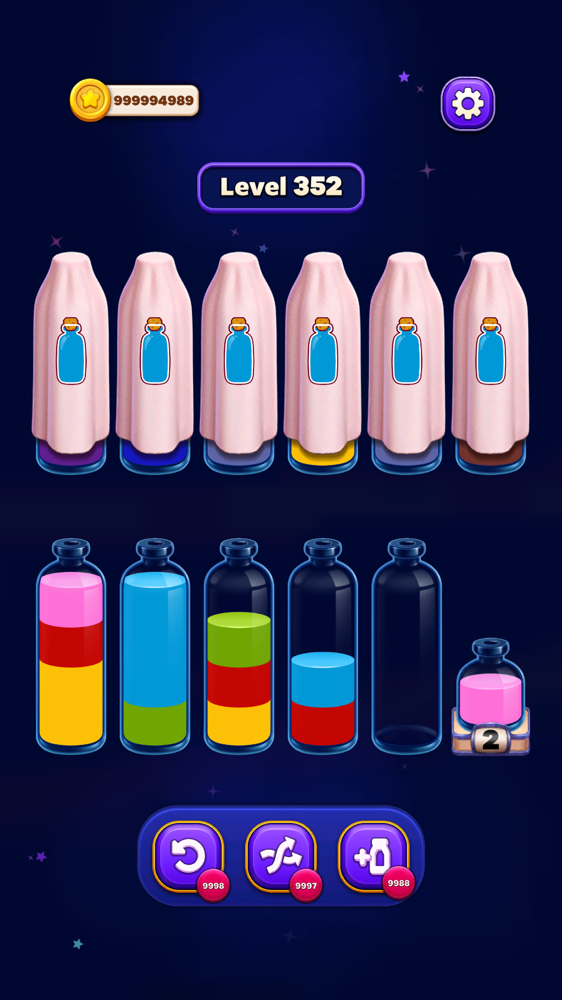

Luồng người chơi từng bước
- 01
Đọc bàn và sức chứa
Người chơi và clientVào level và quan sát các chai, ô ẩn, vật cản cùng số đợt nếu có.
Điều kiện / luật: Model dựng chai theo Height và vị trí; một level có thể gồm nhiều BottleCollection. Chai thường/Daily thường có cấu hình cao 4/12, còn chai đặc biệt có height riêng.
Kết quả theo đặc tả: Bàn phản ánh đúng model trước khi nhận thao tác.
15/11/2026 · Đổ hợp lệ, đổ khác màu và lộ ô dấu hỏiNguồn: BottleSortMechanics.json · use_cases/0 · core_body_gap_decisions_20261115.json · MS-CORE-BODY-03 · core_body_gap_decisions_20261115.json · MS-CORE-BODY-04 · review_cases_20261116_round2.json · core352_moves_observations.json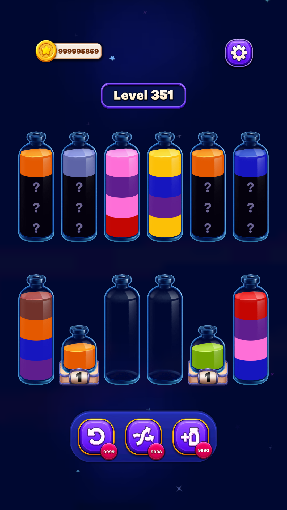
Playtest Bàn level 351 trước các nước đổ đầu tiên; có chai dấu hỏi, hai Generator nhỏ và chai trống.15/11/2026 · app 0.0.3129 · fixture offlineXem case 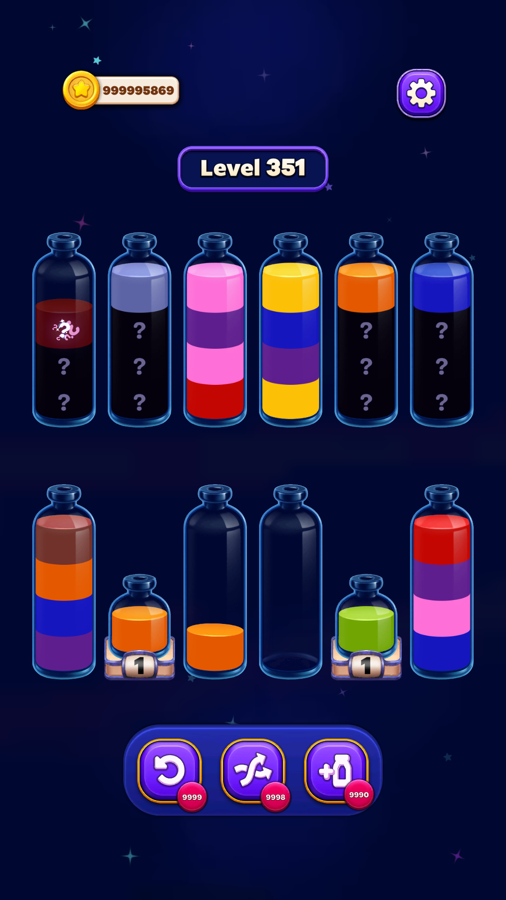
Playtest Cam được chuyển vào chai trống số 9, làm lộ đỏ ở chai 1 trong phép thử đổ hợp lệ.15/11/2026 · app 0.0.3129 · fixture offlineXem case - 02
Nhấc chai nguồn
Người chơiChạm chai có phần nước có thể lấy.
Điều kiện / luật: Selection và blocker kiểm quyền chọn nguồn; chai hoàn thành, bị khóa hoặc đang thuộc selection khác có gate riêng.
Kết quả theo đặc tả: Nguồn được nhấc lên hoặc thao tác bị từ chối mà không đổi nước.
15/11/2026 · Đổ hợp lệ, đổ khác màu và lộ ô dấu hỏiNguồn: BottleSortMechanics.json · use_cases/1 · core_body_gap_decisions_20261115.json · MS-CORE-BODY-03 · core_body_gap_decisions_20261115.json · MS-CORE-BODY-04 · review_cases_20261116_round2.json · core352_moves_observations.json - 03
Chọn đích hoặc hủy lựa chọn
Người chơiChạm chai trống hoặc có mặt nước cùng màu; chạm lại/đổi lựa chọn để hủy theo nhánh input.
Điều kiện / luật: Đích phải còn chỗ và không bị blocker chặn. Cùng màu nhưng đầy vẫn không hợp lệ.
Kết quả theo đặc tả: Selection hợp lệ mới đi tới đổ; tap sai không được xem là một nước thành công.
15/11/2026 · Đổ hợp lệ, đổ khác màu và lộ ô dấu hỏi16/11/2026 · Level 352: full-target bị từ chối, đổ cyan3+1 và lộ màu ẩnNguồn: BottleSortMechanics.json · use_cases/2 · core_body_gap_decisions_20261115.json · MS-CORE-BODY-03 · core_body_gap_decisions_20261115.json · MS-CORE-BODY-04 · review_cases_20261116_round2.json · core352_moves_observations.json
Playtest Bàn vẫn còn sáu cloth và bố cục như trước; ảnh này chưa ghi nhận uncover dù tên file có chữ uncover.16/11/2026 · app 0.0.3129 · fixture offlineXem case 
Playtest Chai đích B11 đã có ba lớp cyan nhưng chưa hoàn thành đầy; sáu cloth chưa được coi là đã gỡ ở mốc này.16/11/2026 · app 0.0.3129 · fixture offlineXem case - 04
Chuyển đủ lượng có thể đổ
ClientTính lượng màu liền nhau ở đỉnh nguồn và phần trống của đích.
Điều kiện / luật: Lượng chuyển bị giới hạn bởi top-water liền màu và sức chứa hợp lệ; không mặc định luôn lấy đúng một ô hoặc toàn chai.
Kết quả theo đặc tả: Dữ liệu và đường nước phản ánh cùng lượng chuyển.
16/11/2026 · Level 352: full-target bị từ chối, đổ cyan3+1 và lộ màu ẩnNguồn: BottleSortMechanics.json · use_cases/3 · core_body_gap_decisions_20261115.json · MS-CORE-BODY-03 · core_body_gap_decisions_20261115.json · MS-CORE-BODY-04 · review_cases_20261116_round2.json · core352_moves_observations.json
Playtest Chai B11 đầy cyan và có nút; sáu cloth đã biến mất, lộ các lớp dấu hỏi trên hàng trên.16/11/2026 · app 0.0.3129 · fixture offlineXem case 
Playtest Checkpoint ổn định sau uncover: chai cyan hoàn chỉnh và sáu chai đã bỏ cloth; dùng làm mốc trước Undo.16/11/2026 · app 0.0.3129 · fixture offlineXem case - 05
Hoàn tất animation và cập nhật bàn
Người chơi và clientTheo dõi chai nguồn bay, nghiêng rồi trở về.
Điều kiện / luật: Có nhiều selection cùng tồn tại nhưng khóa theo chai; xét input khi animation đang chạy phải theo gate, không suy cả bàn luôn bị khóa.
Kết quả theo đặc tả: Sau callback, dữ liệu nguồn/đích và trạng thái chọn nhất quán.
15/11/2026 · Đổ hợp lệ, đổ khác màu và lộ ô dấu hỏi16/11/2026 · Level 352: full-target bị từ chối, đổ cyan3+1 và lộ màu ẩnNguồn: BottleSortMechanics.json · use_cases/4 · core_body_gap_decisions_20261115.json · MS-CORE-BODY-03 · core_body_gap_decisions_20261115.json · MS-CORE-BODY-04 · review_cases_20261116_round2.json · core352_moves_observations.json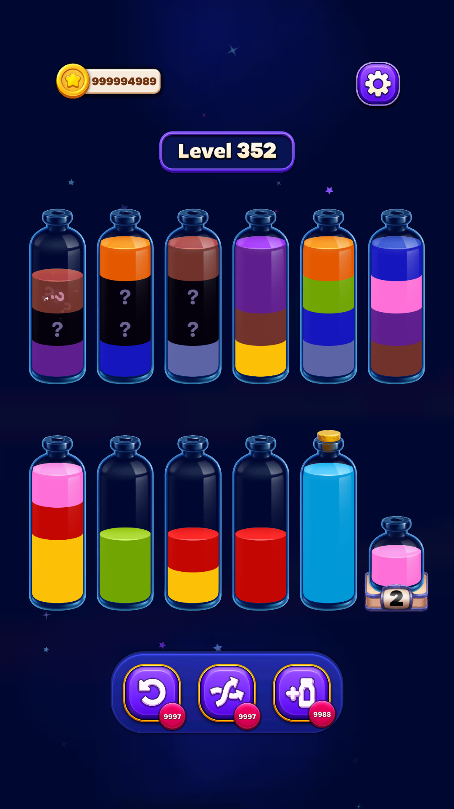
Playtest Một lớp nâu ở chai dấu hỏi đã lộ sau các nước đổ; các lớp ẩn khác vẫn còn.16/11/2026 · app 0.0.3129 · fixture offlineXem case 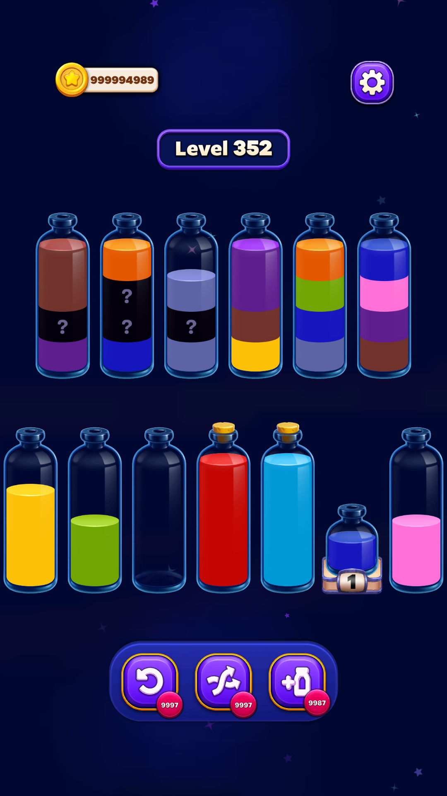
Playtest Chai đỏ đã hoàn thành trong chuỗi giải; các lớp dấu hỏi tiếp tục được lộ theo nước đổ.16/11/2026 · app 0.0.3129 · fixture offlineXem case - 06
Hoàn thành chai đúng điều kiện
ClientĐánh giá chai sau khi nước ổn định.
Điều kiện / luật: Code 0.0.3063 yêu cầu isCompletable, chưa hoàn thành, không rỗng, nước đỉnh cao bằng Height và mọi nước visible. Khi board có chai dài còn có điều kiện tổng lượng màu hoặc bản thân là chai dài.
Kết quả theo đặc tả: Không hoàn thành chai chưa đầy chỉ vì màu đó còn ít; cap và callback chỉ chạy khi predicate đúng.
16/11/2026 · Level 352: full-target bị từ chối, đổ cyan3+1 và lộ màu ẩnNguồn: BottleSortMechanics.json · use_cases/5 · core_body_gap_decisions_20261115.json · MS-CORE-BODY-03 · core_body_gap_decisions_20261115.json · MS-CORE-BODY-04 · review_cases_20261116_round2.json · core352_moves_observations.json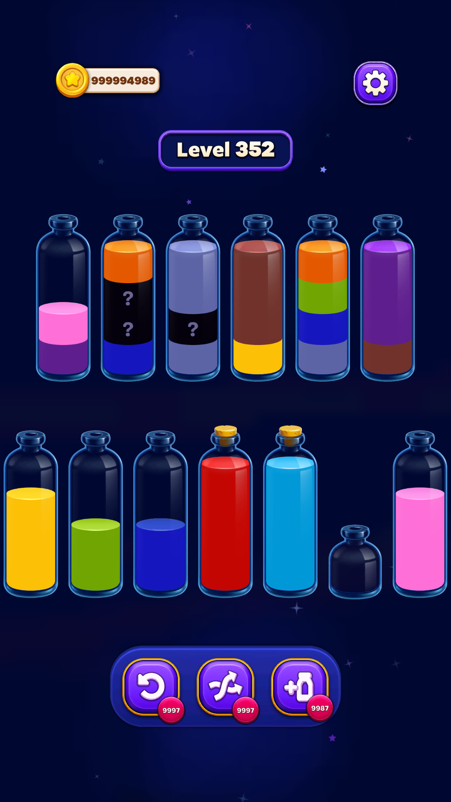
Playtest Generator nhỏ đã trống; trên bàn vẫn còn các lớp ẩn cần tiếp tục xử lý.16/11/2026 · app 0.0.3129 · fixture offlineXem case 
Playtest Checkpoint có nhiều chai đồng màu hoàn chỉnh với nút; màn vẫn chưa được coi là đã thắng ở bước này.16/11/2026 · app 0.0.3129 · fixture offlineXem case - 07
Đọc màu vừa lộ
Người chơiĐổ phần nước phía trên ô dấu hỏi rồi lập lại kế hoạch.
Điều kiện / luật: Question Mark che thông tin; việc lộ màu có thể thay đổi quyết định tiếp theo. Round 2 level 352 ghi lộ dần ở ba chai, không xác lập mọi mẫu hidden.
Kết quả theo đặc tả: Thông tin mới trở thành dữ liệu để chọn nước đi tiếp.
15/11/2026 · Đổ hợp lệ, đổ khác màu và lộ ô dấu hỏi16/11/2026 · Level 352: full-target bị từ chối, đổ cyan3+1 và lộ màu ẩnNguồn: BottleSortMechanics.json · use_cases/10 · core_body_gap_decisions_20261115.json · MS-CORE-BODY-03 · core_body_gap_decisions_20261115.json · MS-CORE-BODY-04 · review_cases_20261116_round2.json · core352_moves_observations.json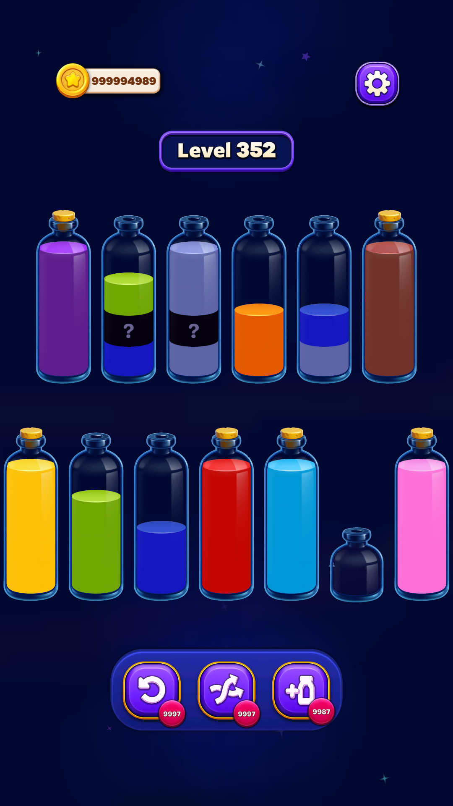
Playtest Tiếp tục lộ lớp ở chai dấu hỏi thứ hai trong chuỗi giải; không gán ColorId số từ màu nhìn thấy.16/11/2026 · app 0.0.3129 · fixture offlineXem case 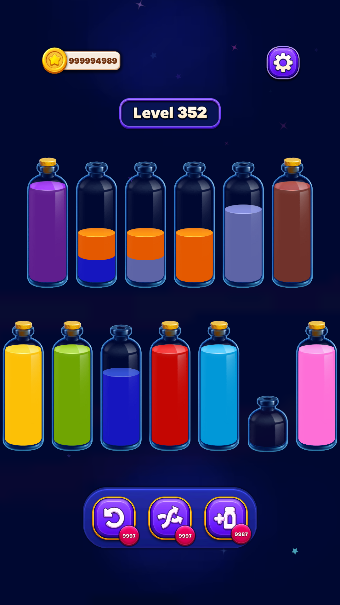
Playtest Các lớp cam ẩn cuối được lộ trong chuỗi checkpoint; đây là trạng thái trước các nước hoàn tất.16/11/2026 · app 0.0.3129 · fixture offlineXem case - 08
Xét kẹt sau khi bàn dừng
ClientChờ bàn ổn định rồi kiểm nước đi và lối giải đặc biệt.
Điều kiện / luật: HasNoMove 0.0.3063 không chỉ kiểm có cặp chai cùng màu; nó tính capacity, loại một số chuyển dịch dư thừa và có nhánh special resolver.
Kết quả theo đặc tả: Chỉ mở Stuck sau quy trình kiểm; thấy một đường đổ hình học không đủ kết luận chắc chắn chưa kẹt.
Nguồn: BottleSortMechanics.json · use_cases/7 · core_body_gap_decisions_20261115.json · MS-CORE-BODY-03 · core_body_gap_decisions_20261115.json · MS-CORE-BODY-04 · review_cases_20261116_round2.json · core352_moves_observations.json - 09
Chuyển đợt hoặc thắng
ClientKhi collection hiện tại được dọn, chuyển đợt kế nếu còn.
Điều kiện / luật: Collection cleared và level win là hai mốc khác nhau; Undo qua ranh giới đợt chưa được xác minh.
Kết quả theo đặc tả: Đợt cuối hoàn tất mới chuyển tới thắng level.
Nguồn: BottleSortMechanics.json · use_cases/6 · core_body_gap_decisions_20261115.json · MS-CORE-BODY-03 · core_body_gap_decisions_20261115.json · MS-CORE-BODY-04 · review_cases_20261116_round2.json · core352_moves_observations.json - 10
Hoàn tác trong phạm vi hỗ trợ
Người chơiDùng Undo sau một nước đổ hợp lệ.
Điều kiện / luật: Round 2 phục hồi nước và cap cyan nhưng không phục hồi sáu cloth đã tháo; Undo không phải snapshot rollback mọi hệ.
Kết quả theo đặc tả: Đọc lại cả nước lẫn blocker sau Undo, không hứa khôi phục toàn bộ trạng thái.
Nguồn: BottleSortMechanics.json · use_cases/9 · core_body_gap_decisions_20261115.json · MS-CORE-BODY-03 · core_body_gap_decisions_20261115.json · MS-CORE-BODY-04 · review_cases_20261116_round2.json · core352_moves_observations.json


Quy tắc cần nắm
| Quy tắc | Hành vi theo nguồn | Căn cứ |
|---|---|---|
| Đồng màu chưa đủ để hoàn thành | Phải thỏa completable, full height và visibility; nhánh long-bottle là điều kiện bổ sung chứ không phải quyền cap chai còn thiếu nước. | Nguồn: BottleSortMechanics.json · flow · BottleSortMechanics.json · configs · core_body_gap_decisions_20261115.json · MS-CORE-BODY-03 · core_body_gap_decisions_20261115.json · MS-CORE-BODY-04 · review_cases_20261116_round2.json · core352_moves_observations.json |
| Kiểm thắng, kiểm kẹt và timer khác nhau | Chế độ thường kiểm collection và nước đi; Daily có đường TimeIsUp riêng. Không dùng kết luận về finite-life Daily khi mới đọc manager không thấy debit. | Nguồn: BottleSortMechanics.json · flow · BottleSortMechanics.json · configs · core_body_gap_decisions_20261115.json · MS-CORE-BODY-03 · core_body_gap_decisions_20261115.json · MS-CORE-BODY-04 · review_cases_20261116_round2.json · core352_moves_observations.json |
| Quan sát 352 có giới hạn | Round 2 xác minh từ chối đổ vào chai đầy, gộp cyan, tháo cloth, hidden reveal và một Undo. Không suy seed identity hay mọi animation/selection race từ chuỗi này. | Nguồn: BottleSortMechanics.json · flow · BottleSortMechanics.json · configs · core_body_gap_decisions_20261115.json · MS-CORE-BODY-03 · core_body_gap_decisions_20261115.json · MS-CORE-BODY-04 · review_cases_20261116_round2.json · core352_moves_observations.json |
Số liệu & phần thưởng
Phần thưởng
BẢNG MÃ MÀU NƯỚC (ColorId, 24 giá trị)
| Mốc | Điều kiện | Phần thưởng |
|---|---|---|
| BLACK | ColorId = -1 | Ô đen chỉ dùng trong Level Editor |
| LBLUE / DBLUE | ColorId = 0 / 1 | Xanh dương nhạt / đậm |
| ORANGE | ColorId = 2 | Cam |
| LGREEN / DGREEN | ColorId = 3 / 4 | Xanh lá nhạt / đậm |
| WHITE | ColorId = 5 | Trắng |
| WINE | ColorId = 6 | Đỏ rượu |
| BROWN | ColorId = 7 | Nâu |
| YELLOW | ColorId = 8 | Vàng |
| VIOLET | ColorId = 9 | Tím |
| PINK | ColorId = 10 | Hồng |
| RED | ColorId = 11 | Đỏ |
| NONE | ColorId = 12 | ColorId cho chai trống trong logic màu nhận nước còn phụ thuộc capacity blocker và lock. |
| GRAY | ColorId = 13 | Xám |
| RAINBOW1 / RAINBOW2 / RAINBOW3 | ColorId = 14 / 15 / 16 | Ba biến thể cầu vồng |
| EMERALD | ColorId = 17 | Ngọc lục bảo |
| MUSTARD | ColorId = 18 | Vàng mù tạt |
| DPINK | ColorId = 19 | Hồng đậm |
| MINT | ColorId = 20 | Bạc hà |
| LAVENDER | ColorId = 21 | Oải hương |
| BEIGE | ColorId = 22 | Be |
GÓC NGHIÊNG CHAI THEO LƯỢNG NƯỚC (_rotationsByHeights)
| Mốc | Điều kiện | Phần thưởng |
|---|---|---|
| Bậc 1 | Chai 4 unit | 35 độ |
| Bậc 2 | Chai 4 unit | 65 độ |
| Bậc 3 | Chai 4 unit | 80 độ |
| Bậc 4 | Chai 4 unit | 85 độ |
| Bậc 5 | Chai 4 unit | 100 độ |
| Bậc 6 | Chai 4 unit | 105 độ |
| Bậc 1 | Chai 2 unit | 45 độ |
| Bậc 2 | Chai 2 unit | 60 độ |
| Bậc 3 | Chai 2 unit | 105 độ |
THỜI LƯỢNG HOẠT ẢNH ĐỔ NƯỚC (BottleAnimationConfigFor4UnitVar0.asset)
| Mốc | Điều kiện | Phần thưởng |
|---|---|---|
| _riseHeight | Độ cao nhấc chai khi đổ | 1 85 unit |
| _riseBottleDuration | Thời gian nhấc chai | 0 5 giây |
| _extraRiseBottleDurationByWaterDropHeight | Cộng thêm theo mỗi bậc rơi | 0 15 giây |
| _waterLineDuration | Dòng nước nối hai chai | 0 6 giây |
| _moveToTargetMinDuration | Bay tới chai đích | tối thiểu 0 2 giây |
| _moveToInitialPositionMinDuration | Bay về chỗ cũ | tối thiểu 0 3 giây |
| _bottleSelectionAnimationDuration | Nhô chai khi chọn | 0 09 giây |
| _bottleSelectionAnimationHeight | Độ cao nhô chai | 1 unit (0 7 cho bàn 3 hàng) |
THỨ TỰ LỚP VẼ TRÊN BÀN (SortingService)
| Mốc | Điều kiện | Phần thưởng |
|---|---|---|
| BottleBackFirstSortOrder | Mặt sau chai | 1 |
| WaterFirstSortOrder | Khối nước đầu tiên | 200 |
| BlockerBackSortOrder | Vật cản sau chai | 500 |
| SelectedBottleTargetSortOrder | Chai đích khi đang đổ | 1000 |
| BottleSittingSortOrder / BottleAnimatingSortOrder | Chai đứng yên / đang chạy hoạt ảnh | 1000 / 1000 |
| SelectedBottleOriginSortOrder | Chai nguồn khi đang đổ | 1500 |
| BottleFrontFirstSortOrder | Mặt trước chai | 2000 |
| BlockerFrontSortOrder | Vật cản trước chai | 3000 |
| SnitchSortOrder | Snitch, lớp trên cùng bàn | 3100 |
| Sorting layer | Danh sách layer | Default BottlesSitting BottlesAnimating BottlesClicked PopUp |
CHIỀU CAO CHAI VÀ BỐ CỤC BÀN
| Mốc | Điều kiện | Phần thưởng |
|---|---|---|
| DefaultBottleHeight (Regular) | Level thường | 4 ô |
| DefaultBottleHeight (Daily) | Daily Level | 12 ô |
| DistanceBetweenRowsAsUnit (Regular) | Khoảng cách hàng chai | 4 unit |
| DistanceBetweenRowsAsUnit (Daily) | Khoảng cách hàng chai | 12 unit |
| ConfigsByBottleHeight | Danh sách cấu hình hoạt ảnh | 12 mục (một mục null) |
| Chiều cao có asset cấu hình | BottleAnimationConfigFor*Unit | 1 4 (2 biến thể) 5 8 10 11 12 15 16 18 unit |
| Cấu hình chai đặc biệt | Asset riêng | MagicBottleAnimationConfig ChargeableBottleAnimationConfig |
Số liệu chính
| Chỉ số | Giá trị | Nguồn |
|---|---|---|
| Chiều cao chai mặc định (level thường) | 4 ô | BottleCollectionPlacementConfig.DefaultBottleHeight (Regular) |
| Chiều cao chai Daily | 12 ô | BottleCollectionPlacementConfig.DefaultBottleHeight (Daily) |
| Khoảng cách giữa các hàng chai | 4 unit (thường) / 12 unit (Daily) | BottleCollectionPlacementConfig.DistanceBetweenRowsAsUnit |
| Số mã màu nước | 24 giá trị (BLACK = -1 … BEIGE = 22) | ColorId.cs |
| Số loại item đặt lên bàn | 29 giá trị (None = 0 … ChargeableBottle = 28) | ItemType.cs |
| Số chế độ nhận chạm | 4 (None=0, WaterSortSelection=1, BottleSelection=2, ItemSelection=3) | InputMode.cs |
| Độ cao nhấc chai khi đổ | 1,85 unit | BottleAnimationConfig._riseHeight |
| Thời gian nhấc chai | 0,5 giây | BottleAnimationConfig._riseBottleDuration |
| Cộng thêm theo bậc rơi của nước | 0,15 giây | BottleAnimationConfig._extraRiseBottleDurationByWaterDropHeight |
| Thời gian dòng nước nối hai chai | 0,6 giây | BottleAnimationConfig._waterLineDuration |
| Thời gian bay tới đích / bay về | tối thiểu 0,2 / 0,3 giây | BottleAnimationConfig._moveToTargetMinDuration / _moveToInitialPositionMinDuration |
| Hiệu ứng nhô chai khi chọn | 0,09 giây, cao 1 unit (0,7 cho bàn 3 hàng) | BottleAnimationConfig._bottleSelectionAnimationDuration / Height |
| Góc nghiêng chai 4 unit | 35, 65, 80, 85, 100, 105 độ | BottleAnimationConfig._rotationsByHeights |
| Góc nghiêng chai 2 unit | 45, 60, 105 độ | BottleAnimationConfig._rotationsByHeightsFor2UnitBottle |
| Số cấu hình hoạt ảnh theo chiều cao | 12 mục (một mục null) | ConfigsByBottleHeight.BottleAnimationConfigs |
| Chiều cao chai có asset cấu hình | 1, 4, 5, 8, 10, 11, 12, 15, 16, 18 unit | BottleAnimationConfigFor*Unit.asset |
| Sort order mặt sau chai | 1 | SortingService.BottleBackFirstSortOrder |
| Sort order khối nước đầu tiên | 200 | SortingService.WaterFirstSortOrder |
| Sort order vật cản sau / trước chai | 500 / 3000 | SortingService.BlockerBackSortOrder / BlockerFrontSortOrder |
| Sort order mặt trước chai | 2000 | SortingService.BottleFrontFirstSortOrder |
| Sort order chai nguồn / chai đích khi đổ | 1500 / 1000 | SortingService.SelectedBottleOriginSortOrder / SelectedBottleTargetSortOrder |
| Sort order của Snitch | 3100 (lớp trên cùng bàn) | SortingService.SnitchSortOrder |
| Số kiểu preset chai trong Level Editor | 3 (DeterBottle=1, Luck=2, PartialLuck=3) | BottlePresetType.cs |
| Số thành phần phụ vẽ kèm item | 5 (None=0, WaterLine=1, Blob=2, FrogPath=3, Shadow=4) | ItemPartType.cs |
| Số ColorConfig asset | 18 màu cơ bản, cộng palette VariantA và VariantB | Assets/MonoBehaviour/*ColorConfig.asset |
Các quyết định trong luồng
| Tình huống | Cách xử lý theo nguồn | Căn cứ |
|---|---|---|
| Tại sao phải cho thấy sức chứa rõ như màu? | Đúng màu nhưng đầy vẫn bị chặn; người chơi cần đọc cả hai để hiểu tap sai và không đổ lỗi cho input. | Runtime 077 giữ nguyên bàn khi đích đầy. Nguồn: BottleSortMechanics.json · flow · BottleSortMechanics.json · configs · core_body_gap_decisions_20261115.json · MS-CORE-BODY-03 · core_body_gap_decisions_20261115.json · MS-CORE-BODY-04 · review_cases_20261116_round2.json · core352_moves_observations.json |
| Undo nên được mô tả là gì? | Hoàn tác nước đi được hỗ trợ; các thay đổi phụ thuộc blocker có thể không hồi nguyên. Hướng dẫn cần tránh lời hứa quay lại toàn bộ snapshot. | Round 2 080→081 và hồ sơ booster. Nguồn: BottleSortMechanics.json · flow · BottleSortMechanics.json · configs · core_body_gap_decisions_20261115.json · MS-CORE-BODY-03 · core_body_gap_decisions_20261115.json · MS-CORE-BODY-04 · review_cases_20261116_round2.json · core352_moves_observations.json |
Nhánh lỗi và phục hồi
| Điều kiện | Hành vi mong đợi | Phạm vi đã kiểm |
|---|---|---|
| Chọn đích đầy, sai màu hoặc bị chặn | Từ chối selection không hợp lệ; cho người chơi chọn lại hoặc hủy theo input. | Theo nguồn/UC đã chỉ rõ; câu round 2 có phạm vi case, không full UC pass. |
| Bàn tưởng không còn đường | Kiểm special resolver và gate board stopped trước Stuck; chưa hứa mọi layout sẽ được tự cứu. | Theo nguồn/UC đã chỉ rõ; câu round 2 có phạm vi case, không full UC pass. |
| Undo sau khi mở vật cản | Phân biệt hoàn tác nước với phục hồi blocker; dùng quan sát cụ thể, không suy mọi loại đều giống cloth. | Theo nguồn/UC đã chỉ rõ; câu round 2 có phạm vi case, không full UC pass. |
Nhận định & vận dụng
Đúng màu nhưng đầy vẫn bị chặn; người chơi cần đọc cả hai để hiểu tap sai và không đổ lỗi cho input.
Runtime 077 giữ nguyên bàn khi đích đầy.
Hoàn tác nước đi được hỗ trợ; các thay đổi phụ thuộc blocker có thể không hồi nguyên. Hướng dẫn cần tránh lời hứa quay lại toàn bộ snapshot.
Round 2 080→081 và hồ sơ booster.
Ảnh chụp bổ sung & nguồn bằng chứng
Một frame trong chuỗi quan sát của fixture offline; đọc cùng case/ledger trước–sau. Không suy toàn bộ UC, mọi seed, internal ColorId hoặc server sync từ ảnh.
Không coi ảnh lịch sử hoặc ảnh ép bật bằng fixture là trạng thái production hiện tại.
Những ảnh còn lại của tính năng được giữ mở sẵn bên dưới. Các ảnh đã đặt ở phần tóm tắt hoặc bước liên quan không lặp lại trong gallery này.


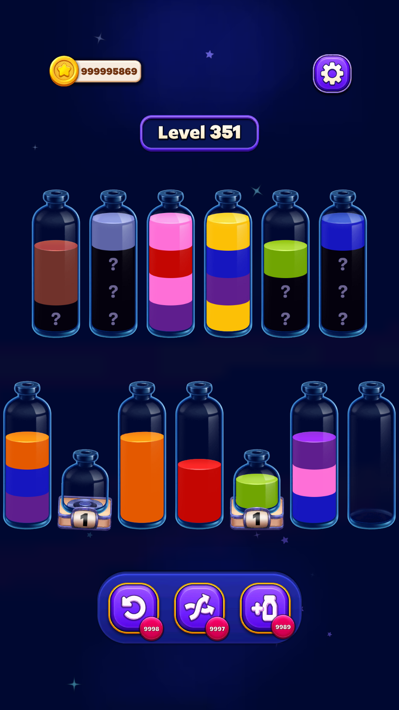

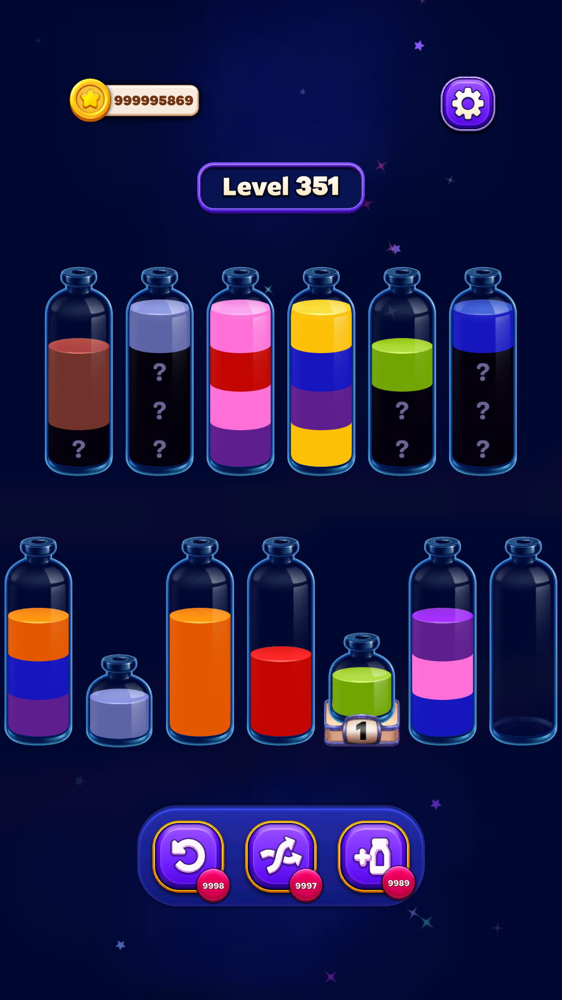

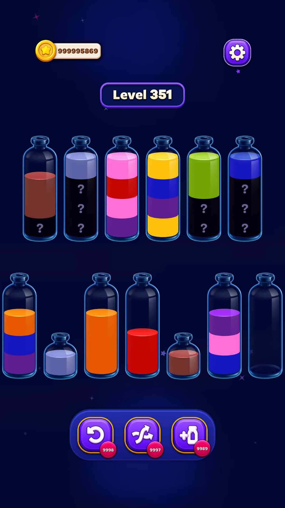


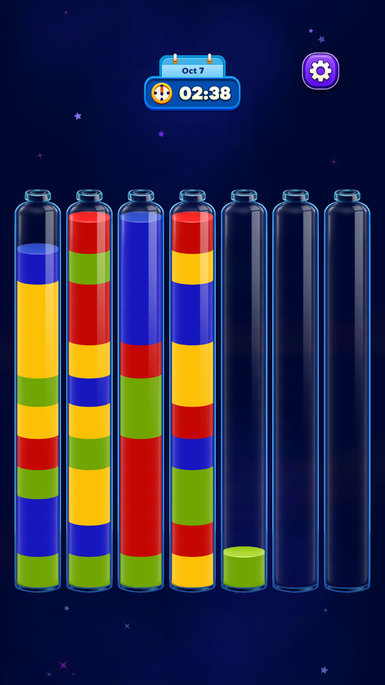

Case đầy đủ: expected, actual và ledger · Ảnh lịch sử và tài nguyên gốc
Tổng quan & điều kiện mở
Mô tả
- Bàn chơi gồm nhiều chai xếp thành hàng, mỗi chai có số ô (Height) chứa các khối nước màu.
- Người chơi tap chai nguồn rồi tap chai đích; nước màu trên cùng chảy sang nếu đích trống hoặc cùng màu ở trên cùng và còn chỗ.
- Chai đủ điều kiện hoàn thành được đóng nắp, chạy hiệu ứng và khóa chọn. Round 2 vẫn thấy chai đã cap trên bàn; không mô tả mọi chai hoàn thành đều biến mất.
- Thắng khi mọi chai đều hoàn thành hoặc trống; thua chỉ khi bàn hết nước đi hợp lệ hoặc hết giờ ở Daily.
- Khác water-sort truyền thống, chai không đứng yên: chai nguồn bay lên và sang cạnh chai đích rồi nghiêng theo lượng nước.
- Nhiều khối nước cùng màu liền nhau được gộp (TryMergeColors) và đổ trong một lần.
- Một level có thể chia thành nhiều đợt chai (BottleCollection); dọn xong đợt này thì đợt kế hiện ra.
- Ô Question Mark che giấu màu cho tới khi khối nước phía trên bị lấy đi hoặc dùng booster Reveal.
- Chai có thể bị blocker che phủ (Curtain, Woodbox) hoặc gắn từng ô (Plaster, Clay, MagicSeal, Ice), quyết định ô nào dùng được.
- Chai thường cao 4 ô, chai Daily cao 12 ô; hệ thống có cấu hình hoạt ảnh riêng cho 10 chiều cao khác nhau.
Mở khóa & điểm vào
Có từ level 1. Bảng màu và số chai thay đổi theo cấu hình level; các biến thể hình ảnh bật/tắt bằng RootLevelConfigModel (IsNewBottleVisualsEnabled, IsNewBottleParticlesEnabled, IsBackgroundAndShelvesEnabled, ColorVariant chọn ColorPalette A/B).
Điểm vào:
- Bàn chơi trong scene GamePlay (BottleCollection.GenerateBottles)
- Daily Level dùng cùng cơ chế với chai cao 12 ô
- Level Editor (Modules.LevelEditor.WaterSort) dựng bàn từ preset
Luồng chi tiết theo nguồn
Cách hoạt động
- GenerateBottleCollections(levelAndLevelConfigModel, isDaily) tạo một hoặc nhiều BottleCollection từ danh sách BottleItemModel.
- SortBottleModels xếp model thành hàng theo tọa độ Y; FindMaxBottleHeight chọn cấu hình camera và hoạt ảnh theo chiều cao lớn nhất.
- GenerateBottles dựng từng BottleItem qua AddBottle(x, y, bottleHeight) và Prepare(...), rồi AddWaterItem/InsertWaterItem điền khối nước theo ColorId.
- Gắn blocker (Curtain, Plaster, Clay, Tag, Ice, Generator, Woodbox, Carpet, Toggle, Ivy, Frog, MagicSeal, Duck, Safe, Mosaic, Bag, Firework, Rainbow, Icicle, ChargeableBottle, Snitch) và kệ qua AddShelvesIfNeeded.
- Tap lần 1: GetIntersectedBottle(worldPosition, inputMode) tìm chai; CanSelectAsOrigin kiểm chai không trống, không bị AnimationLock, không bị blocker chặn.
- Chai được chọn nhô lên 1 unit trong 0,09 giây (0,7 unit cho bàn 3 hàng) và chuyển sang sorting layer 'BottlesClicked' với sort order 1500.
- Tap lần 2: IsSelectableAsTarget(originBottle, waterColorId) loại trừ chính chai nguồn, chai đã hoàn thành, chai đầy, chai khác màu ở trên cùng và chai có blocker đang chặn.
- SelectionResult.GetSelectionResult tính WaterHeightToMove cùng chiều cao nước trước/sau của cả hai chai.
- Chai nguồn nhấc lên 1,85 unit trong 0,5 giây, cộng thêm 0,15 giây cho mỗi bậc rơi, bay sang cạnh chai đích (tối thiểu 0,2 giây).
- GetRotationStepsToDropTheWater(isLeft) chọn góc nghiêng từ bảng _rotationsByHeights: chai 4 unit dùng 35, 65, 80, 85, 100, 105 độ; chai 2 unit dùng 45, 60, 105 độ.
- WaterLine nối miệng hai chai vẽ trong 0,6 giây; ApplySelection gọi RemoveWater trên nguồn và AddWater trên đích, rồi TryMergeColors gộp khối cùng màu.
- CompleteSelection kết thúc; chai nguồn quay về chỗ cũ trong tối thiểu 0,3 giây (OnOriginBottleReturnToInitialPosition).
- ShouldComplete 0.0.3063 yêu cầu completable, chưa complete, không rỗng, topWater.Height == Height và mọi nước visible; board có chai dài còn kiểm điều kiện màu/IsLongBottle. Predicate đúng mới đóng nắp và phát callback.
- LevelWinOrStuckSystem.FrameUpdate liên tục kiểm IsBoardStopped(); sạch collection thì NextBottleCollection() hoặc WinLevel() nếu là đợt cuối.
- HasNoMove() duyệt mọi cặp chai nguồn–đích; không còn nước đi và TrySolveSpecialStuck() thất bại thì StuckLevel(StuckType.NoMove); Daily hết giờ thì StuckLevel(StuckType.TimeIsUp).
Luồng chi tiết theo code
BottleCollections.GenerateBottleCollections(levelAndLevelConfigModel, isDaily) đọc danh sách BottleItemModel và tạo một hoặc nhiều BottleCollection. Mỗi BottleCollection.SortBottleModels xếp model thành các hàng theo toạ độ Y, FindMaxBottleHeight tìm chiều cao lớn nhất để chọn cấu hình camera/animation, rồi GenerateBottles dựng từng BottleItem: AddBottle(x, y, bottleHeight) → Prepare(...) và AddWaterItem/InsertWaterItem cho từng khối nước với ColorId, sau đó gắn các blocker (Curtain, Plaster, Clay, Tag, Ice, Generator, Woodbox, Carpet, Toggle, Ivy, Frog, MagicSeal, Duck, Safe, Mosaic, Bag, Firework, Rainbow, Icicle, ChargeableBottle, Snitch) và kệ (AddShelvesIfNeeded). GameplayInputSystem.OnTouchDown lấy toạ độ thế giới → BottleCollection.GetIntersectedBottle(worldPosition, InputMode, out bottle). Lần tap đầu: Selection.CanSelectAsOrigin(bottle) → SelectAsOrigin, chai nhô lên (PlayBottleSelectedAnimation). Lần tap thứ hai: Selection.CanSelectAsTarget(target, origin) kiểm tra BottleItem.IsSelectableAsTarget(originBottle, waterColorId); nếu hợp lệ → SelectAsTarget, SelectionResult.GetSelectionResult tính WaterHeightToMove và chiều cao nước trước/sau của cả hai chai, chai nguồn bay sang, nghiêng theo RotationSteps (GetRotationStepsToDropTheWater) và WaterLine nối hai miệng chai để đổ; ApplySelection cập nhật dữ liệu (RemoveWater/AddWater), CompleteSelection kết thúc và chai nguồn quay về chỗ cũ (OnOriginBottleReturnToInitialPosition). Nếu tap lại chính chai đó hoặc chai không hợp lệ thì Deselect / TryCancel / ReverseSelection. Sau mỗi lượt, BottleItem.TryComplete kiểm tra ShouldComplete 0.0.3063: base = isCompletable && !IsCompleted && !IsEmpty && topWater.Height == Height && IsAllWatersVisible. Không có chai dài trên board thì dùng base; có chai dài thì thêm (GetColorCount(topColor) == Height || IsLongBottle). Không có nhánh hoàn thành chai chưa đầy. Khi predicate đúng thì Complete() và bắn OnBottleCompleted cho BottleCollection và các chai bên cạnh (mở khoá blocker phụ thuộc). LevelWinOrStuckSystem.FrameUpdate liên tục gọi CheckAndApplyLevelWinOrHasNoMove: khi IsBoardStopped() (không còn animation) mà BottleCollections.IsCollectionCleared() thì thắng (hoặc NextBottleCollection nếu chưa phải collection cuối); nếu HasNoMove() thì TrySolveSpecialStuck() thử gỡ (ví dụ Generator còn sinh nước), thất bại thì báo StuckType.NoMove. CheckAndApplyTimeIsUp() xử lý hết giờ ở Daily (StuckType.TimeIsUp).
Use case (20)
Đặc tả UC mô tả hành vi theo nguồn. Kết quả mong đợi không phải kết quả đã chạy; case quan sát được liên kết riêng ở từng UC.
Bấm vào từng use case để mở. Mở/đóng tất cả
UC-01 Dựng bàn chơi từ model level
Có bằng chứng một số nhánh; chưa full UC pass.
15/11/2026 · Đổ hợp lệ, đổ khác màu và lộ ô dấu hỏiCác bước- BottleCollections.GenerateBottleCollections(levelAndLevelConfigModel, isDaily) tạo danh sách BottleCollection (level nhiều đợt sẽ có nhiều collection)
- BottleCollection.SortBottleModels xếp model thành List<List<BottleItemModel>> theo hàng; FindMaxBottleHeight chọn cấu hình theo chiều cao lớn nhất
- GetColorsInLevel / GetColorAmountsInLevel / GetColorCountsInLevel thống kê số khối mỗi màu (dùng cho luật hoàn thành chai và cho Mega Shuffle)
- GenerateBottles(bottlesModels, remapColors, levelDifficultyType): với remapColors = true thì ConvertColorIds đổi ColorId sang bảng màu hiện hành (ColorService.GetColorAndColorId)
- AddBottle(x, y, bottleHeight) → BottleItem.Prepare(viewOffset, initialSortingOrder, height, bottleAndWaterVariant, frontSortOrder, backSortOrder, bottleAnimationConfig, sorting, isCompletable, bottleCollection, isLongBottle)
- AddWaterItem / InsertWaterItem / AddQuestionMarkItem điền nội dung; AddShelvesIfNeeded thêm kệ
- SetLeftBottle/SetRightBottle nối hàng xóm để xử lý blocker liên chai
| Actor | System |
|---|---|
| Trigger | StartLevel |
| Điều kiện | Có LevelAndLevelConfigModel với danh sách BottleItemModel |
| Kết quả mong đợi theo nguồn | Bàn chơi hoàn chỉnh, camera căn theo BottleCollectionCameraConfig phù hợp (thường / new background / zoom) |
| Quy tắc / số liệu | DefaultBottleHeight = 4 ô (level thường) và 12 ô (Daily); DistanceBetweenRowsAsUnit = 4 (thường) / 12 (Daily). ConfigsByBottleHeight có 12 mục BottleAnimationConfig, các asset tồn tại cho chiều cao 1, 4 (2 biến thể), 5, 8, 10, 11, 12, 15, 16, 18 unit. |
| Bằng chứng đặc tả | BottleCollections.GenerateBottleCollections; BottleCollection.GenerateBottles; BottleCollection.SortBottleModels; BottleCollection.AddBottle; BottleItem.Prepare; ConfigsBottleCollectionPlacementConfigRegular.asset |
UC-02 Chọn chai nguồn (tap lần 1)
Có bằng chứng một số nhánh; chưa full UC pass.
15/11/2026 · Đổ hợp lệ, đổ khác màu và lộ ô dấu hỏiCác bước- GameplayInputSystem.OnTouchDown(worldPosition) → BottleCollection.GetIntersectedBottle(worldPosition, inputMode, out bottle) (BottleItem.IsIntersect dùng Bounds)
- SelectionSystem.OnSelectionInput(bottleCollection, bottleItem) tạo Selection mới
- Selection.CanSelectAsOrigin(bottle) → BottleItem.IsSelectableAsOrigin(): chai không trống, không đang bị animation khoá (AnimationLock), không bị blocker chặn (duyệt danh sách _blockers)
- SelectAsOrigin → BottleItem.OnSelectAsOrigin(selection): PlayBottleSelectedAnimation nâng chai lên (_bottleSelectionAnimationHeight = 1 unit, 0.7 cho bàn 3 hàng, thời lượng 0.09s), SortingService đặt sorting layer 'BottlesClicked'
- GamePlayInputHistory.AddBottleClick(bottleId) ghi lịch sử; nếu tap chỗ trống thì AddFalseClick()
| Actor | Player |
|---|---|
| Trigger | Chạm vào một chai |
| Điều kiện | GameplayInputSystem đang Activate, InputMode = WaterSortSelection |
| Kết quả mong đợi theo nguồn | Chai nguồn được đánh dấu, chờ tap thứ hai |
| Quy tắc / số liệu | Nếu tap lại chính chai đang chọn → Deselect (PlayBottleDeSelectedAnimation). SortingService: SelectedBottleOriginSortOrder = 1500, SelectedBottleTargetSortOrder = 1000, layer 'BottlesClicked'. |
| Bằng chứng đặc tả | GameplayInputSystem.OnTouchDown; SelectionSystem.OnSelectionInput; Selection.CanSelectAsOrigin; BottleItem.IsSelectableAsOrigin; BottleItem.OnSelectAsOrigin; GamePlayInputHistory.AddBottleClick |
UC-03 Chọn chai đích và kiểm tra luật đổ màu
Có bằng chứng một số nhánh; chưa full UC pass.
15/11/2026 · Đổ hợp lệ, đổ khác màu và lộ ô dấu hỏi16/11/2026 · Level 352: full-target bị từ chối, đổ cyan3+1 và lộ màu ẩnCác bước- Selection.CanSelectAsTarget(targetBottle, originBottle) → BottleItem.IsSelectableAsTarget(originBottle, waterColorId)
- Loại trừ: chai đích chính là chai nguồn; chai đích đã IsCompleted; chai đích đầy (IsFull)
- So màu: lấy GetTopWaterColorAndColorId() của chai đích; nếu chai trống thì coi như ColorId.NONE (12) và luôn nhận; nếu khác màu nước đang đổ → false
- Duyệt _blockers của chai đích: blocker nào đang chặn (ví dụ Curtain/Plaster/Clay/MagicSeal/Woodbox) → false
- Luật vật cản đặc biệt cùng màu: nếu chai đích có blocker Clay (ItemType = 5) thì BottleCollection.HasDifferentBottleWithClayAndSameColor(origin, target) chặn; tương tự HasDifferentBottleWithIceAndSameColor cho Ice
- Duyệt _outItems (vật đang bám ngoài chai) — nếu có vật cản đang chiếm chỗ thì từ chối
- Hợp lệ → SelectAsTarget(targetBottle) và BottleItem.OnSelectAsTarget(selection)
| Actor | Player |
|---|---|
| Trigger | Chạm chai thứ hai khi đã có chai nguồn |
| Điều kiện | Selection.IsSelectedOriginBottle = true |
| Kết quả mong đợi theo nguồn | Cặp nguồn–đích được xác lập; nếu không hợp lệ, chai đích chỉ nháy phản hồi và selection bị huỷ |
| Quy tắc / số liệu | Quy tắc water-sort chuẩn: đổ được khi đích trống HOẶC màu trên cùng của đích trùng màu đang đổ VÀ đích còn ô trống. Magic Sort bổ sung tầng kiểm tra blocker và luật 'cùng màu ở chai khác' của Clay/Ice. |
| Bằng chứng đặc tả | Selection.CanSelectAsTarget; BottleItem.IsSelectableAsTarget; BottleItem.IsSelectableAsTargetExceptAnimation; BottleCollection.HasDifferentBottleWithClayAndSameColor; BottleCollection.HasDifferentBottleWithIceAndSameColor |
UC-04 Tính lượng nước được đổ
Có bằng chứng một số nhánh; chưa full UC pass.
16/11/2026 · Level 352: full-target bị từ chối, đổ cyan3+1 và lộ màu ẩnCác bước- BottleItem.GetTopWater() lấy khối nước trên cùng của chai nguồn; GetTopWaterHeight() cho biết bao nhiêu ô cùng màu liền nhau
- BottleItem.GetTopWaterHeightIfTheSameColorId(colorId) trên chai đích và GetEmptyCellCount() cho biết còn bao nhiêu ô
- SelectionResult.GetSelectionResult(originBottleTopWater, cells, targetBottle) trả về WaterColorAndColorId, WaterHeightToMove, TargetBottleWaterHeightOld/New, OriginBottleWaterHeightOld/New
- WaterHeightToMove = min(chiều cao khối màu trên cùng của nguồn, số ô trống của đích)
- BottleItem.GetRotationStepsToDropTheWater(isLeft) trả RotationSteps (FirstStep, SecondStep) — góc nghiêng lấy theo bảng _rotationsByHeights của BottleAnimationConfig
| Actor | System |
|---|---|
| Trigger | Sau khi chọn được chai đích |
| Điều kiện | - |
| Kết quả mong đợi theo nguồn | Toàn bộ khối màu trên cùng được đổ một lần (không phải từng ô), tối đa bằng chỗ trống của chai đích |
| Quy tắc / số liệu | Với chai 4 unit, bảng góc nghiêng theo lượng nước là 35 / 65 / 80 / 85 / 100 / 105 độ; chai 2 unit dùng 45 / 60 / 105; chai 1 unit có bảng riêng. |
| Bằng chứng đặc tả | SelectionResult.GetSelectionResult; BottleItem.GetTopWaterHeight; BottleItem.GetEmptyCellCount; BottleItem.GetRotationStepsToDropTheWater; BottleAnimationConfigFor4UnitVar0.asset |
UC-05 Thực hiện đổ nước (animation + dữ liệu)
Có bằng chứng một số nhánh; chưa full UC pass.
15/11/2026 · Đổ hợp lệ, đổ khác màu và lộ ô dấu hỏi16/11/2026 · Level 352: full-target bị từ chối, đổ cyan3+1 và lộ màu ẩnCác bước- BottleCollection.OnAnyMoveStarted(originBottle, targetBottle, waterColorId) khoá bàn và thông báo blocker
- Chai nguồn bay lên và sang cạnh chai đích (BottleItem.OnBottleMove(pourableHeight, isLeft, moveDuration)), _riseHeight = 1.85, _riseBottleDuration = 0.5s, cộng thêm _extraRiseBottleDurationByWaterDropHeight = 0.15s cho mỗi bậc rơi
- WaterLine nối miệng hai chai được vẽ trong _waterLineDuration = 0.6s; BottleItem.RotateWaters(rotation) làm mặt nước nghiêng theo chai
- Selection.ApplySelection: chai nguồn BottleItem.RemoveWater(height) / DecreaseWaterHeight, chai đích AddWater(height, colorId, isVisible) và PlayRegularWaterFillingAnimation (Daily dùng DailyPlayWaterFillingAnimation)
- BottleItem.TryMergeColors() gộp các khối nước liền nhau cùng màu và cùng độ hiển thị; UpdateBottleWaters / UpdateSortOrders / UpdateFillAmountsWithoutAnimation làm mới hiển thị
- BottleItem.OnPouringCompletedToTargetBottle(selection), sau đó chai nguồn OnOriginBottleReturnToInitialPosition (thời lượng tối thiểu _moveToInitialPositionMinDuration = 0.3s, tới đích tối thiểu 0.2s)
- BottleCollection.OnAnyMoveFinished() mở khoá; LevelStats tăng total_move_count
- Nếu bị huỷ giữa chừng: Selection.ReverseSelection() / TryCancel() và BottleCollection.OnReverseSelection
| Actor | System |
|---|---|
| Trigger | Selection hợp lệ |
| Điều kiện | - |
| Kết quả mong đợi theo nguồn | Nước chuyển sang chai đích, bàn cập nhật; SelectionSystem lưu Selection vào _selectionHistory phục vụ Undo |
| Quy tắc / số liệu | SortingService điều phối lớp vẽ trong lúc đổ: WaterFirstSortOrder = 200, BottleBackFirstSortOrder = 1, BottleFrontFirstSortOrder = 2000, BlockerBackSortOrder = 500, BlockerFrontSortOrder = 3000, SnitchSortOrder = 3100; layer 'BottlesSitting'/'BottlesAnimating'/'BottlesClicked'. |
| Bằng chứng đặc tả | Selection.ApplySelection; Selection.CompleteSelection; BottleItem.OnBottleMove; BottleItem.RemoveWater; BottleItem.AddWater; BottleItem.TryMergeColors; BottleCollection.OnAnyMoveStarted; BottleCollection.OnAnyMoveFinished; SortingService |
UC-06 Hoàn thành một chai
Có bằng chứng một số nhánh; chưa full UC pass.
16/11/2026 · Level 352: full-target bị từ chối, đổ cyan3+1 và lộ màu ẩnCác bước- BottleItem.TryComplete() → ShouldComplete(): _isCompletable && !IsEmpty() && chiều cao khối nước trên cùng == Height (đầy nguyên chai một màu)
- Base = isCompletable && !IsCompleted && !IsEmpty && topWater.Height==Height && IsAllWatersVisible. Không có long bottle trên board→base. Có long bottle→base && (collection.GetColorCount(topColor)==Height || IsLongBottle). Không có nhánh hoàn thành chai chưa đầy chỉ vì màu còn ít.
- Complete(): đặt IsCompleted = true, chạy BottleCompleteAnimationController (đóng nắp, WinParticle)
- BottleItem.OnBottleCompleted() và các chai hàng xóm nhận OnNeighbourBottleCompleted() để cập nhật blocker liên chai
- BottleCollection.OnBottleCompleted(completedBottle, waterColorId) cập nhật thống kê, kích hoạt Duck/Mosaic/Safe/Bag nếu đúng màu
- LevelStats tăng bottles_completed
| Actor | System |
|---|---|
| Trigger | Sau khi đổ xong một lượt |
| Điều kiện | Chai có _isCompletable = true |
| Kết quả mong đợi theo nguồn | Chai bị khoá lại, không thể chọn làm nguồn hay đích nữa; giải phóng không gian tâm lý cho người chơi |
| Quy tắc / số liệu | IsAllVisibleSameColor / IsAllWatersSameColor / IsAllVisibleSameColorAndNotFull là các hàm phụ trợ kiểm tra đồng màu; CanComplete() trả false ngay nếu _isCompletable = false (chai đặc biệt như ChargeableBottle/Generator). |
| Bằng chứng đặc tả | BottleItem.TryComplete; BottleItem.ShouldComplete; BottleItem.Complete; BottleItem.OnBottleCompleted; BottleItem.OnNeighbourBottleCompleted; BottleCollection.OnBottleCompleted; BottleCollection.GetColorCount |
UC-07 Kiểm tra thắng level
Chưa có case trực tiếp trong hai lượt review 15–16/11.
Các bước- LevelWinOrStuckSystem.FrameUpdate(elapsedSeconds) → CheckAndApplyLevelWinOrHasNoMove()
- IsBoardStopped(): không còn animation nào chạy (IsThereAnyAnimationRunning = false) và không có selection đang xử lý
- BottleCollections.IsCollectionCleared() kiểm tra collection hiện tại đã sạch
- Nếu chưa phải collection cuối (IsLastCollection() = false) → NextBottleCollection() nạp đợt chai kế tiếp
- Nếu là đợt cuối → ILevelManager.WinLevel()
- IsAlreadyInStuckOrWinOrLoseState() chặn gọi trùng
| Actor | System |
|---|---|
| Trigger | Mỗi frame khi bàn dừng animation |
| Điều kiện | - |
| Kết quả mong đợi theo nguồn | Thắng level hoặc chuyển sang đợt chai tiếp theo trong cùng level |
| Quy tắc / số liệu | Có method BottleCollections.TryGetPreviousBottleCollection, nhưng chưa đủ bằng chứng để kết luận Undo quay lại collection trước. Cần đọc caller/body chuyển đợt và chạy fixture 2 collection; trạng thái UNRESOLVED (MS-I02). |
| Bằng chứng đặc tả | LevelWinOrStuckSystem.CheckAndApplyLevelWinOrHasNoMove; LevelWinOrStuckSystem.IsBoardStopped; BottleCollections.IsCollectionCleared; BottleCollections.NextBottleCollection; BottleCollections.IsLastCollection |
UC-08 Phát hiện bàn kẹt (hết nước đi)
Chưa có case trực tiếp trong hai lượt review 15–16/11.
Các bước- LevelWinOrStuckSystem.HasNoMove(): duyệt mọi cặp (chai nguồn, chai đích) kiểm tra IsSelectableAsOriginExceptAnimation và IsSelectableAsTargetExceptAnimation
- BottleCollections.IsCollectionStuck() xác nhận cho collection hiện tại
- LevelWinOrStuckSystem.TrySolveSpecialStuck(): thử các lối thoát đặc biệt (Generator còn sinh nước, Toggle có thể đảo, Frog/Duck có thể hành động) trước khi kết luận
- Không gỡ được → LevelWinOrStuckSystem.IsLevelStuck() = true → ILevelManager.StuckLevel(StuckType.NoMove)
- GameplayInputSystem.OnLevelStuck() khoá input
| Actor | System |
|---|---|
| Trigger | Bàn dừng nhưng chưa thắng |
| Điều kiện | - |
| Kết quả mong đợi theo nguồn | Mở StuckPopup mời Play On (xem tính năng LevelFlow) |
| Quy tắc / số liệu | RequestLevelWinOrStuckCheck() cho phép hệ thống khác (booster, generator) yêu cầu kiểm tra lại ngay |
| Bằng chứng đặc tả | LevelWinOrStuckSystem.HasNoMove; LevelWinOrStuckSystem.TrySolveSpecialStuck; LevelWinOrStuckSystem.IsLevelStuck; BottleCollections.IsCollectionStuck; GameplayInputSystem.OnLevelStuck |
UC-09 Hết giờ ở Daily Level
Chưa có case trực tiếp trong hai lượt review 15–16/11.
Các bước- LevelWinOrStuckSystem.CheckAndApplyTimeIsUp() gọi IsTimeUp() dựa trên LevelTimer
- ILevelManager.StuckLevel(StuckType.TimeIsUp)
- LevelStats ghi _lastTimeIsUpStuckRemainingTime và remaining_time
| Actor | System |
|---|---|
| Trigger | LevelTimer đếm về 0 |
| Điều kiện | Đang chơi Daily |
| Kết quả mong đợi theo nguồn | Mở popup kẹt dạng hết giờ, cho phép mua thêm thời gian/Play On |
| Quy tắc / số liệu | GrandRemoteDailyLevelsConfig.PlayOnDurationInSeconds quy định thời gian cộng thêm khi Play On ở Daily |
| Bằng chứng đặc tả | LevelWinOrStuckSystem.CheckAndApplyTimeIsUp; LevelWinOrStuckSystem.IsTimeUp; StuckType.TimeIsUp; GrandRemoteDailyLevelsConfig.PlayOnDurationInSeconds |
UC-10 Hoàn tác nước đi cuối (Undo)
Chưa có case trực tiếp trong hai lượt review 15–16/11.
Các bước- SelectionSystem.ReverseLastSelection() lấy Selection cuối trong _selectionHistory
- BottleItem.OnBeforeUndoLastWaterPour(waterHeight) trên chai đích rồi UndoLastWaterPour(waterHeight, topWaterColorId) trả nước về
- BottleItem.UndoLastWaterFill(waterHeight) trên chai nguồn khôi phục khối nước
- STATIC: Shuffle.MoveNext (RVA 0x19B6D3C) gọi ResetSelectionHistory sau khi nhận target khác null. Chưa xác nhận ResetSelectionHistory tại ranh giới collection; không khẳng định có hay không Undo qua đợt từ tên method.
- LevelStats tăng undo_used
| Actor | Player |
|---|---|
| Trigger | Bấm booster Undo hoặc nhận Undo từ Play On |
| Điều kiện | SelectionSystem.HasSelectionHistory() = true |
| Kết quả mong đợi theo nguồn | Bàn trở lại trạng thái trước nước đi cuối |
| Quy tắc / số liệu | Phạm vi Undo qua ranh giới BottleCollection chưa kết luận. OBSERVED 10/10: Undo ngay sau Shuffle không làm đổi bàn hoặc trừ item; sau nước đổ mới, Undo giảm 9.998→9.997 và trả về trạng thái sau Shuffle. Case này không chứng minh luật đổi collection hoặc Mega Shuffle. |
| Bằng chứng đặc tả | SelectionSystem.ReverseLastSelection; SelectionSystem.HasSelectionHistory; SelectionSystem.ResetSelectionHistory; BottleItem.UndoLastWaterPour; BottleItem.UndoLastWaterFill; BoosterManager.<Shuffle>d__15.MoveNext RVA 0x19B6D3C; analysis/14-implementation-design.md MS-I02; analysis/15-demo-walkthrough.md |
UC-11 Ô Question Mark che giấu màu
Có bằng chứng một số nhánh; chưa full UC pass.
15/11/2026 · Đổ hợp lệ, đổ khác màu và lộ ô dấu hỏi16/11/2026 · Level 352: full-target bị từ chối, đổ cyan3+1 và lộ màu ẩnCác bước- BottleCollection.AddQuestionMarkItem(bottle, index, isDaily) thay khối nước bằng QuestionMarkItem
- BottleItem.UpdateColorVisibilities() và HidesWaterColors() giữ màu ẩn
- Khi khối nước phía trên bị lấy đi, RevealBottleCells() lộ dần màu thật; BottleItem.ToggleInvisibleWaters điều khiển hiển thị
- Booster Reveal (CurrencyType.Reveal = 19) và BottleItem.Reveal()/CanReveal() cho phép lộ chủ động
- LevelStats đếm _questionMarkCount và _questionMarkOpened; BottleItem.GetQuestionMarkCount()
| Actor | System |
|---|---|
| Trigger | Level có ô dấu hỏi trong model chai |
| Điều kiện | - |
| Kết quả mong đợi theo nguồn | Người chơi phải phán đoán; tăng độ khó và tạo nhu cầu dùng booster Reveal |
| Quy tắc / số liệu | Booster Reveal bật/tắt bằng RootLevelConfigModel.IsRevealBoosterEnabled; giá GameEconomyModel.RevealPrice. SortingService.GetQuestionMarkSortOrder(indexOfWater) sắp lớp vẽ. |
| Bằng chứng đặc tả | BottleCollection.AddQuestionMarkItem; BottleItem.RevealBottleCells; BottleItem.CanReveal; BottleItem.GetQuestionMarkCount; BottleItem.HidesWaterColors |
UC-12 Bảng màu và biến thể màu
Chưa có case trực tiếp trong hai lượt review 15–16/11.
Các bước- ColorService.Initialize() chọn _currentColorPalette trong ba ColorPalette: mặc định, VariantA, VariantB (theo RootLevelConfigModel.ColorVariant)
- ColorService.GetColorAndColorId(ColorId) / (int index) trả ColorAndColorId (màu hiển thị + id logic)
- BottleCollection.ConvertColorIds ánh xạ lại ColorId của level sang danh sách màu thực dùng khi remapColors = true
- ColorService.GetBlackColorAndColorId() dành cho ô đen (ColorId.BLACK = -1) dùng trong Level Editor
- BottleCollectionUtil.AdjustBlackColorInEditorModeWithConstantCount phân bổ ô đen thành màu khác ở chế độ editor
| Actor | System |
|---|---|
| Trigger | Khởi tạo ColorService |
| Điều kiện | - |
| Kết quả mong đợi theo nguồn | Cùng một seed level có thể hiển thị bằng bộ màu khác nhau để AB test độ khó thị giác |
| Quy tắc / số liệu | ColorId có 24 giá trị: BLACK=-1, LBLUE=0, DBLUE=1, ORANGE=2, LGREEN=3, DGREEN=4, WHITE=5, WINE=6, BROWN=7, YELLOW=8, VIOLET=9, PINK=10, RED=11, NONE=12, GRAY=13, RAINBOW1=14, RAINBOW2=15, RAINBOW3=16, EMERALD=17, MUSTARD=18, DPINK=19, MINT=20, LAVENDER=21, BEIGE=22. Mỗi màu có một ColorConfig asset riêng. |
| Bằng chứng đặc tả | ColorService.Initialize; ColorService.GetColorAndColorId; ColorService.GetAvailableColorsForEditorMode; BottleCollection.ConvertColorIds; BottleCollectionUtil.AdjustBlackColorInEditorModeWithConstantCount |
UC-13 Thêm chai phụ (Extra Bottle / Magic Bottle)
Chưa có case trực tiếp trong hai lượt review 15–16/11.
Các bước- BottleCollection.GetExtraBottleIndex() tìm vị trí trống (GetRowIndexWithLeastBottle, HasRowLongBottle)
- AddExtraBottle(delay) thêm chai rỗng chiều cao mặc định; AddBottleWithCustomHeight(delay, height) cho chai nhỏ (Tiny Bottle)
- AddBottleAsMagicBottle() thêm chai đặc biệt do tính năng Magic Bottle, chạy MagicBottleRevealAnimation
- BottlePositionAdjuster / BottleCollectionCameraConfig căn lại bố cục và camera
- LevelStats tăng extrabottle_used
| Actor | Player | System |
|---|---|
| Trigger | Dùng booster ExtraBottle hoặc nhận Play On ExtraBottle/ExtraTinyBottle; hoặc Magic Bottle từ meta |
| Điều kiện | BottleCollection.IsBottlesCountReachedMax() = false |
| Kết quả mong đợi theo nguồn | Bàn có thêm chỗ trống, thường gỡ được thế kẹt |
| Quy tắc / số liệu | Số chai tối đa trong hàng do GetMaxBottleCountInRow(); _maxBottleCount giới hạn tổng số chai. Giá booster: GameEconomyModel.ExtraBottlePrice, mở khoá tại ExtraBottleUnlockAtLevel. |
| Bằng chứng đặc tả | BottleCollection.AddExtraBottle; BottleCollection.AddBottleWithCustomHeight; BottleCollection.AddBottleAsMagicBottle; BottleCollection.IsBottlesCountReachedMax; BottleCollection.GetExtraBottleIndex |
UC-14 Xáo trộn nội dung chai (Shuffle booster)
Chưa có case trực tiếp trong hai lượt review 15–16/11.
Các bước- InputMode chuyển sang BottleSelection; WaitForSelection chờ target, chưa trừ item. STATIC: Shuffle.MoveNext RVA 0x19B6D3C thoát trước Spend nếu target null; target hợp lệ mới ResetSelectionHistory, Spend item/coin rồi thi hành Shuffle. OBSERVED 10/10: mở chọn và huỷ giữ 9.999; chọn hợp lệ giảm còn 9.998.
- BottleItem.OnShuffleSelected() / OnShuffleDeselected() cho phản hồi hình ảnh
- BottleItem.GetShuffledWaters() và GetWaterItemsWithSpecificTopColor(topWaterAndColor) tạo thứ tự mới
- BottleItem.Shuffle(colorOrders) → ChangeWaterOrders + ShuffleAnimation (BottleShuffleAnimationConfig)
- UpdateBottleData(watersInside, watersOutside, tryRevealQuestionMarks) ghi lại dữ liệu
- LevelStats tăng shuffle_used
| Actor | Player |
|---|---|
| Trigger | Bấm booster Shuffle rồi chọn chai |
| Điều kiện | BottleItem.CanShuffle() = true |
| Kết quả mong đợi theo nguồn | Thứ tự màu trong chai được đảo, thường mở ra nước đi mới |
| Quy tắc / số liệu | Khác với Mega Shuffle (trộn toàn bàn, xem LevelFlow UC-08). Giá: GameEconomyModel.ShufflePrice; mở khoá tại ShuffleUnlockAtLevel. |
| Bằng chứng đặc tả | BottleItem.CanShuffle; BottleItem.Shuffle; BottleItem.GetShuffledWaters; BottleItem.ChangeWaterOrders; GameplayInputSystem.WaitForSelection; BoosterManager.<Shuffle>d__15.MoveNext RVA 0x19B6D3C; analysis/15-demo-walkthrough.md |
UC-15 Chai bị blocker che phủ
Chưa có case trực tiếp trong hai lượt review 15–16/11.
Các bước- BottleItem.AddBlocker(ABlockerItem) / RemoveBlocker; AddOutItem/RemoveOutItem cho vật nằm ngoài chai
- BottleItem.HasBlocker(ItemType) và HasOverlayBlocker() dùng trong IsSelectableAsOrigin/AsTarget
- GetHighestPriorityBlocker() chọn blocker phải phá trước
- BottleItem.TryGetFirstBlockedWaterIndexFromTheBottom(out index) và CacheBlockedIndexes() xác định các ô bị khoá; _firstUnblockedCellIndex quyết định ô nào dùng được
- SortingService.GetBlockerFrontSorting/GetBlockerBackSorting xếp lớp vẽ trước/sau chai
| Actor | System |
|---|---|
| Trigger | Level có blocker gắn lên chai |
| Điều kiện | - |
| Kết quả mong đợi theo nguồn | Chai bị khoá một phần hoặc toàn bộ cho tới khi blocker bị phá (xem tính năng Obstacles) |
| Quy tắc / số liệu | OverlayBlockerModel là loại phủ toàn chai (Curtain/Woodbox); BlockerModel là loại gắn từng ô (Plaster/Clay/MagicSeal/Ice) |
| Bằng chứng đặc tả | BottleItem.AddBlocker; BottleItem.HasBlocker; BottleItem.HasOverlayBlocker; BottleItem.GetHighestPriorityBlocker; BottleItem.CacheBlockedIndexes; BottleItem.TryGetFirstBlockedWaterIndexFromTheBottom |
UC-16 Bàn nhiều đợt chai trong một level
Chưa có case trực tiếp trong hai lượt review 15–16/11.
Các bước- BottleCollections.GenerateBottleCollections tạo danh sách; _currentBottleCollectionIndex bắt đầu ở 0
- Khi IsCollectionCleared() và chưa IsLastCollection() → NextBottleCollection() tăng chỉ số và hiện đợt kế tiếp
- Có TryGetPreviousBottleCollection(out bottleCollection) trong mã; chưa xác nhận caller dùng nó để hoàn tác qua ranh giới đợt. Tên API không đồng nghĩa với khả năng Undo của người chơi.
- GetBottleCollectionIndex() dùng cho hiển thị tiến độ
- Deinitialize() dọn khi rời level
| Actor | System |
|---|---|
| Trigger | Level được cấu hình nhiều BottleCollection |
| Điều kiện | - |
| Kết quả mong đợi theo nguồn | Level dài chia thành nhiều màn nhỏ, tăng cảm giác tiến bộ |
| Quy tắc / số liệu | Mega Shuffle nhận cả BottleCollections để chỉ trộn collection hiện tại |
| Bằng chứng đặc tả | BottleCollections.NextBottleCollection; BottleCollections.IsLastCollection; BottleCollections.TryGetPreviousBottleCollection; BottleCollections.GetBottleCollectionIndex |
UC-17 Chai dài và kệ (Long Bottle / Shelf)
Chưa có case trực tiếp trong hai lượt review 15–16/11.
Các bước- BottleItem.Prepare nhận isLongBottle; IsLongBottle ảnh hưởng luật ShouldComplete
- BottleCollection.HasRowLongBottle(rowIndex) và BottleCollections.HasLongBottle() điều chỉnh bố cục hàng
- BottleCollection.AddShelvesIfNeeded(levelDifficultyType) đặt ShelfItem theo ShelfConfig; ShelfUtil hỗ trợ căn chỉnh
- BottleCollection.HasBoardLongBottles() quyết định chọn cấu hình camera 'TallBottles' (FailFlowAnimationTallBottlesConfig, GameUIViewTallBottlesConfig)
| Actor | System |
|---|---|
| Trigger | Level dùng ItemType.LongBottle (21) hoặc ItemType.Shelf (22) |
| Điều kiện | - |
| Kết quả mong đợi theo nguồn | Bàn có chai cao/dài với dung tích lớn hơn, UI và camera co giãn theo |
| Quy tắc / số liệu | Chiều cao chai có asset cấu hình cho 1, 4, 5, 8, 10, 11, 12, 15, 16, 18 unit; kệ chỉ xuất hiện khi RootLevelConfigModel.IsBackgroundAndShelvesEnabled |
| Bằng chứng đặc tả | BottleItem.IsLongBottle; BottleCollection.HasRowLongBottle; BottleCollection.AddShelvesIfNeeded; BottleCollections.HasLongBottle; BottleCollection.HasBoardLongBottles |
UC-18 Ghi nhận thao tác sai và lịch sử tap
Chưa có case trực tiếp trong hai lượt review 15–16/11.
Các bước- GamePlayInputHistory.AddFalseClick() tăng _falseClickCount
- GamePlayInputHistory.AddBottleClick(bottleId) ghi id chai vào _bottleClickHistory
- GameplayInputSystem.GetInputHistory() gọi GetBottleClickHistoryShorten() nén thành chuỗi ngắn
- GameplayInputSystem.OnClickedToUIOnBottleSelection() xử lý trường hợp chạm nhầm UI khi đang chọn chai bằng booster
- ClearHistory() khi bắt đầu level mới
| Actor | System |
|---|---|
| Trigger | Người chơi chạm chỗ trống hoặc chai không hợp lệ |
| Điều kiện | - |
| Kết quả mong đợi theo nguồn | Chuỗi lịch sử gửi kèm analytics để phân tích hành vi và phát hiện bàn khó hiểu |
| Quy tắc / số liệu | - |
| Bằng chứng đặc tả | GamePlayInputHistory.AddFalseClick; GamePlayInputHistory.GetBottleClickHistoryShorten; GameplayInputSystem.GetInputHistory; GameplayInputSystem.OnClickedToUIOnBottleSelection |
UC-19 Khoá/mở input trong quá trình chơi
Chưa có case trực tiếp trong hai lượt review 15–16/11.
Các bước- GameplayInputSystem.Deactivate() khi mở popup hoặc chạy sequence; Activate() khi trở lại
- SelectionSystem.TryCancelAllSelections() huỷ mọi selection đang chạy khi cần dừng gấp
- BottleItem.AnimationLock (Lock) và _involvedSelectionLockAsOrigin/_involvedSelectionLockAsTarget chặn chọn trùng
- SelectionSystem.IsSelectionRunning() / GetRunningSelections() cho hệ thống khác biết bàn đang bận
- GameplayInputSystem.OnTouchCancel(position) xử lý huỷ chạm
| Actor | System |
|---|---|
| Trigger | Animation dài, popup mở, level kết thúc |
| Điều kiện | - |
| Kết quả mong đợi theo nguồn | Các lock và input gates được thiết kế để ngăn chọn chồng cùng chai; chưa có bằng chứng bao quát mọi race hoặc tổ hợp animation. |
| Quy tắc / số liệu | Magic Sort cho phép nhiều selection chạy song song (danh sách _selectionsRunning) nên khoá theo từng chai chứ không khoá toàn bàn |
| Bằng chứng đặc tả | GameplayInputSystem.Activate; GameplayInputSystem.Deactivate; SelectionSystem.TryCancelAllSelections; SelectionSystem.IsSelectionRunning; BottleItem.IsBottleSelectionRunning |
UC-20 Đổ nước từ đáy chai (Generator / hiệu ứng đặc biệt)
Có bằng chứng một số nhánh; chưa full UC pass.
15/11/2026 · Generator tạo màu tiếp theo khi chai rỗngCác bước- BottleItem.AddWaterFromBottom(height, colorId) chèn nước vào đáy thay vì đỉnh; InsertWaterItem(index, height, waterItem)
- PlayWaterFillAnimationFromBottom(insertedHeight, newHeight, colorId, withParticle, isForGenerator)
- PlayGeneratorFillAnimation / PlayGeneratorFillAnimationFromBottom / PlayGeneratorExplosionAnimation cho hiệu ứng máy sinh nước
- GetFirstEmptyCellIndexFromTheBottom() xác định vị trí chèn
- Sau đó RequestLevelWinOrStuckCheck() để đánh giá lại trạng thái bàn
| Actor | System |
|---|---|
| Trigger | Generator sinh nước, Rainbow/Firework kích hoạt |
| Điều kiện | - |
| Kết quả mong đợi theo nguồn | Nội dung chai thay đổi ngoài luồng tap thông thường, có thể gỡ hoặc gây kẹt |
| Quy tắc / số liệu | SortingService.GetGeneratorAnimationSorting điều phối lớp vẽ |
| Bằng chứng đặc tả | BottleItem.AddWaterFromBottom; BottleItem.InsertWaterItem; BottleItem.PlayGeneratorFillAnimation; BottleItem.GetFirstEmptyCellIndexFromTheBottom; LevelWinOrStuckSystem.RequestLevelWinOrStuckCheck |
Playtest & phần chưa xác minh
Case ghi lại một chuỗi thao tác và phạm vi quan sát. Các bước chưa chạy và hợp đồng server vẫn giữ trạng thái riêng.
16/11/2026 Level 352: full-target bị từ chối, đổ cyan3+1 và lộ màu ẩnMS-R16B-CORE01
16/11/2026 · build 0.0.3129 ARM64 · fixture offline · quan sát nhánh
Điều kiện: Root thực hiện lượt level 352 sau toàn bộ nhánh noncore; build 0.0.3129ARM64, offline_existing_fixture, gameplayUID cô lập mạng. Dùng một Undo và một Extra Bottle từ kho fixture lớn; không ghi prefs.
- Mở level 352:12chai, sáu chai đầu phủ cloth có icon cyan; đánh số B1..B12 theo hai hàng trái→phải.
- Thử B10→B8 tại077: B8 đang đầy, không thấy chuyển nước.
- Đổ B8→B11 ba lớp cyan tại078; B10→B11 một lớp cyan tại079, chai cyan hoàn thành.
- Tiếp tục chuỗi root đã ghi trong observations: các lớp Question Mark ở B1/B2/B3 lộ dần;091 không còn các ô ẩn cuối;092 chỉ còn nước đi xanh dương cuối.
Mong đợi
Ghi nhận đúng nhánh thao tác và kết quả UI/ledger của một lượt fixture; không nâng thành full feature/UC pass.
Đã quan sát
077 giữ bố cục/nước như trước, không phải ảnh uncover dù filename như vậy. 078 B11 có cyan ba lớp;079/080 B11 đầy cyan, có nút chai, sáu cloth mất. Ba chai B1/B2/B3 có các ô dấu hỏi sau uncover. Các chuỗi083/088/090/091 lần lượt lộ nâu, hồng, xanh lá và hai lớp cam cuối; các chai đồng màu có cap ở nhiều mốc. Danh sách nước đi và ảnh gốc được lưu riêng.
Giới hạn: Một board runtime; chưa xác định seed/sourcefile của level 352, không gán catalog identity theo số level. Không kiểm mọi transfer quantity, màu/sức chứa khác, stuck/lose, long bottle hoặc multi-collection. Các màu là tên nhìn từ UI, không numeric ColorId.
UC chỉ liên quan, chưa coi là thực thi: UC-01 UC-02 UC-07 UC-10 UC-13 UC-15 UC-20
Phạm vi từng nhánh UC
- UC-03: Full B8 không nhận nước; empty B11 và các đích cùng màu nhận nước trong chuỗi này.
- UC-04: Cyan3 rồi cyan1 vào B11 theo quan sát UI/root actions; không đo nội bộ mọi quantity branch.
- UC-05: Nhiều pour hợp lệ trong một lượt, ảnh chụp các checkpoint; không đo timing/input-lock.
- UC-06: Một số chai đủ màu có cap, gồm cyan/red và các màu cuối; không generalize long-bottle rule.
- UC-11: Ba chai có Question Mark lộ dần khi lấy nước phía trên; không kiểm Undo mọi hidden state.
Trước thao tác: ledger đầy đủ · Sau thao tác: ledger đầy đủ
15/11/2026 Generator tạo màu tiếp theo khi chai rỗngMS-R15-CORE06
15/11/2026 · build 0.0.3129 ARM64 · fixture offline · quan sát nhánh
Điều kiện: App 0.0.3129 ARM64, UID offline, tài nguyên fixture có sẵn; level 351 rồi 352. Nguồn code 0.0.3063 được phân biệt riêng.
- Đổ chai nhỏ cam sang chai cam
- Đợi animation
- Đổ chai nhỏ xanh lá sang chai xanh lá
Mong đợi
Đối chiếu serialized OBIM với màu sinh và UI.
Đã quan sát
Chai nhỏ cam sinh xám, chai nhỏ xanh lá sinh nâu; đai số1 biến mất sau khi phát màu cuối. Source OBIM.Id=18 được converter ánh xạ GeneratorItemModel, NC=[10]/[11].
Giới hạn: Một màu dự trữ mỗi Generator. Không dùng ItemType enum18 để diễn giải serialized discriminator18. Màu enum code cũ khác palette runtime; giữ CI số và ảnh.
15/11/2026 Đổ hợp lệ, đổ khác màu và lộ ô dấu hỏiMS-R15-CORE01
15/11/2026 · build 0.0.3129 ARM64 · fixture offline · quan sát nhánh
Điều kiện: App 0.0.3129 ARM64, UID offline, tài nguyên fixture có sẵn; level 351 rồi 352. Nguồn code 0.0.3063 được phân biệt riêng.
- Chai1 → chai9 trống
- Chai2 màu xám → chai9 màu cam
- Chai5 màu cam → chai9 màu cam
Mong đợi
Chỉ chuyển nước ở nhánh hợp lệ, mở màu nằm dưới lớp vừa đổ.
Đã quan sát
Lần đầu cam chuyển vào chai9, chai1 lộ đỏ; đổ xám lên cam bị từ chối, board không đổi; cam từ chai5 nhập chai9 và lộ xanh lá. Không tiêu coin/booster.
Giới hạn: Chai đánh số từ trái sang phải, hàng trên rồi hàng dưới. Một seed có dấu hỏi/Generator, chưa đại diện mọi obstacle hoặc cơ chế multi-wave.


Điều kiện cần để kiểm tiếp
Nhánh UC cần kiểm tiếp
Đã có nhánh vòng 2; tiếp tục các branch chưa vào và biên chưa đo. Cuối lượt core: chọn level thực mới, kiểm lượng rót nhiều ô, chai đầy và selection cancel, ghi board/tap timeline.
UC chưa có case: UC-07 UC-08 UC-09 UC-10 UC-12 UC-13 UC-14 UC-15 UC-16 UC-17 UC-18 UC-19
Hồ sơ đầy đủ và trạng thái từng nhánh · Báo cáo đối soát 58 mục
Ảnh gốc & tài nguyên trong hồ sơ nền
Ảnh chụp màn hình (3)
3 ảnh chụp trong game (LDPlayer, bản 0.0.3129, tài khoản thử level 321 → 351 (07/10/2026)). Bấm ảnh để phóng to; ảnh chụp lịch sử mở PNG gốc. Nhãn UC dẫn tới use case tương ứng.
Segment & A/B
Các trục dưới tách selector nội dung, trạng thái và experiment; chưa có assignment hoặc uplift mới.
| Trục phân nhóm | Điều kiện chọn | Tác động thiết kế | Mức bằng chứng |
|---|---|---|---|
| Màu và hình thức chai | ColorVariant, palette và các cờ visuals chọn cách biểu diễn. | Đổi độ phân biệt màu, silhouette hoặc hiệu ứng, không tự đổi model seed. | Có cờ variant nhưng chưa có allocation/outcome A/B. |
| Loại bàn và chai đặc biệt | Regular/Daily, nhiều collection, long bottle và blocker quyết định gate. | Đổi sức chứa và phép kiểm hoàn thành/nước đi. | Các nhánh code 0.0.3063 chưa đồng nghĩa đã kiểm runtime 0.0.3129. |
Assignment của tài khoản, tỷ lệ traffic và uplift: chưa được xác minh. Reward bucket, phân khúc thương mại và A/B experiment được phân biệt theo nguồn.
- Cần bằng chứng selector effective, cohort và outcome trước khi kết luận A/B; source tồn tại hoặc một fixture không đủ.
3 dòng nguồn liên quan tới feature — mở bảng đầy đủ
| ID / phân loại | Snapshot / model | Key / kiểu | Giá trị | Consumer, diễn giải & việc cần kiểm |
|---|---|---|---|---|
| MS-SEG-083 variant_config | cache_20260910 rootLevelConfigModel | colorVariant Kiểu: int | 2 | 0.0.3063 ARMv7 · FirebaseRemoteConfigResolver.c · dòng 863 /* "ColorVariant" */Giá trị variant được cache/default/Firebase; chưa có experimentID hoặc traffic split. Kiểm tiếp: Cần experimentID, variant, allocation, activation timestamp, consumer effect và đối chứng cùng điều kiện. |
| MS-SEG-109 variant_config | cache_20261010 rootLevelConfigModel | colorVariant Kiểu: int | 2 | 0.0.3063 ARMv7 · FirebaseRemoteConfigResolver.c · dòng 863 /* "ColorVariant" */Giá trị variant được cache/default/Firebase; chưa có experimentID hoặc traffic split. Kiểm tiếp: Cần experimentID, variant, allocation, activation timestamp, consumer effect và đối chứng cùng điều kiện. |
| MS-SEG-158 variant_config | firebase_20260910 ColorVariant | Kiểu: str | 2 | 0.0.3063 ARMv7 · FirebaseRemoteConfigResolver.c · dòng 863 /* "ColorVariant" */Giá trị variant được cache/default/Firebase; chưa có experimentID hoặc traffic split. Kiểm tiếp: Cần experimentID, variant, allocation, activation timestamp, consumer effect và đối chứng cùng điều kiện. |
Tải tất cả dòng liên quan của feature · Registry 345 dòng nguồn duy nhất
Dữ liệu đầy đủ theo nguồn
Bản mặc định đóng gói trong APK 0.0.3129. Đây là dữ liệu có kiểu đầy đủ; config thực được server chọn cho một tài khoản là phạm vi khác.
GameEconomyModel 30 giá trị / node rỗng
| Đường dẫn | Kiểu | Giá trị |
|---|---|---|
| $.refillPrice | number | 900 |
| $.PlayOnPrice | number | 900 |
| $.SecondPlayOnPrice | number | 1900 |
| $.ThirdSecondPlayOnPrice | number | 2300 |
| $.refillDurationAsMinutes | number | 30 |
| $.maxLifeAmount | number | 5 |
| $.initialCoin | number | 1000 |
| $.initialUndoAmount | number | 3 |
| $.initialShuffleAmount | number | 3 |
| $.initialExtraBottleAmount | number | 3 |
| $.initialFourthBoosterAmount | number | 3 |
| $.undoUnlockAtLevel | number | 15 |
| $.shuffleUnlockAtLevel | number | 15 |
| $.extraBottleUnlockAtLevel | number | 15 |
| $.UndoPrice | number | 300 |
| $.ShufflePrice | number | 300 |
| $.ExtraBottlePrice | number | 900 |
| $.MegaShufflePrice | number | 900 |
| $.RevealPrice | number | 900 |
| $.RegularLevelWinCoinReward | number | 20 |
| $.HardLevelWinCoinReward | number | 60 |
| $.SuperHardLevelWinCoinReward | number | 100 |
| $.IsFirstPlayOnFree | boolean | false |
| $.Hierarchy | number | 10000 |
| $.PlayOnConfigModels[0].PlayOnType | number | 0 |
| $.PlayOnConfigModels[0].Price | number | 900 |
| $.PlayOnConfigModels[1].PlayOnType | number | 0 |
| $.PlayOnConfigModels[1].Price | number | 1900 |
| $.PlayOnConfigModels[2].PlayOnType | number | 0 |
| $.PlayOnConfigModels[2].Price | number | 2300 |
41 dòng cấu hình theo tất cả nguồn
Bảng nền có thể chứa preview giới hạn đã ghi nhãn. Model mặc định đầy đủ có kiểu ở trên; trường không có trong model giữ nguồn và trạng thái riêng.
Cấu hình (41)
Gộp mọi nguồn: const trong code, JSON mặc định trong Resources, bảng static, storage key, AB test, cờ server.
| Nguồn | Key | Kiểu | Giá trị | Ý nghĩa | Nơi định nghĩa |
|---|---|---|---|---|---|
| asset | BottleCollectionPlacementConfig.DefaultBottleHeight | int | 4 (Regular) / 12 (Daily) | Số ô mặc định của một chai | Assets/MonoBehaviour/ConfigsBottleCollectionPlacementConfigRegular.asset, ...Daily.asset |
| asset | BottleCollectionPlacementConfig.DistanceBetweenRowsAsUnit | int | 4 (Regular) / 12 (Daily) | Khoảng cách giữa các hàng chai tính theo unit | cùng asset trên |
| asset | ConfigsByBottleHeight.BottleAnimationConfigs | List<BottleAnimationConfig> | 12 mục (một mục null) | Cấu hình animation theo chiều cao và biến thể chai | Assets/MonoBehaviour/ConfigsByBottleHeight.asset |
| asset | Các BottleAnimationConfig có sẵn | asset | 1, 4 (Var0 + VarBase), 5, 8, 10, 11, 12, 15, 16, 18 unit + MagicBottleAnimationConfig + ChargeableBottleAnimationConfig | Các chiều cao chai được hỗ trợ | Assets/MonoBehaviour/BottleAnimationConfigFor*Unit.asset |
| asset | BottleAnimationConfig._riseHeight | float | 1.85 | Độ cao chai nhấc lên khi đổ (chai 4 unit) | BottleAnimationConfigFor4UnitVar0.asset |
| asset | BottleAnimationConfig._riseBottleDuration | float | 0.5 s | Thời gian nhấc chai | BottleAnimationConfigFor4UnitVar0.asset |
| asset | BottleAnimationConfig._extraRiseBottleDurationByWaterDropHeight | float | 0.15 s | Thời gian cộng thêm theo độ cao rơi của nước | BottleAnimationConfigFor4UnitVar0.asset |
| asset | BottleAnimationConfig._waterLineDuration | float | 0.6 s | Thời gian dòng nước nối giữa hai chai | BottleAnimationConfigFor4UnitVar0.asset |
| asset | BottleAnimationConfig._moveToTargetMinDuration / _moveToInitialPositionMinDuration | float | 0.2 s / 0.3 s | Thời gian tối thiểu bay tới đích và bay về | BottleAnimationConfigFor4UnitVar0.asset |
| asset | BottleAnimationConfig._bottleSelectionAnimationDuration / Height | float | 0.09 s / 1 unit (0.7 cho bàn 3 hàng) | Hiệu ứng nhô chai khi chọn | BottleAnimationConfigFor4UnitVar0.asset |
| asset | BottleAnimationConfig._rotationsByHeights | float[] | 35, 65, 80, 85, 100, 105 (độ) | Góc nghiêng chai 4 unit theo lượng nước đổ | BottleAnimationConfigFor4UnitVar0.asset |
| asset | BottleAnimationConfig._rotationsByHeightsFor2UnitBottle | float[] | 45, 60, 105 (độ) | Góc nghiêng chai 2 unit | BottleAnimationConfigFor4UnitVar0.asset |
| code enum | ColorId | enum | BLACK=-1, LBLUE=0, DBLUE=1, ORANGE=2, LGREEN=3, DGREEN=4, WHITE=5, WINE=6, BROWN=7, YELLOW=8, VIOLET=9, PINK=10, RED=11, NONE=12, GRAY=13, RAINBOW1=14, RAINBOW2=15, RAINBOW3=16, EMERALD=17, MUSTARD=18, DPINK=19, MINT=20, LAVENDER=21, BEIGE=22 | Mã màu nước (24 giá trị) | BoardItems/Scripts/Common/ColorNS/ColorId.cs |
| asset | ColorConfig assets | asset | Beige, Black, Brown, DBlue, DGreen, DPink, Emerald, Gray, LBlue, LGreen, Lavender, Mint, Mustard, Orange, Pink, Red, Violet, White (+ palette VariantA/VariantB) | Màu hiển thị của từng ColorId | Assets/MonoBehaviour/*ColorConfig.asset |
| code enum | ItemType | enum | None=0, Bottle=1, Water=2, QuestionMark=3, Curtain=4, Clay=5, Plaster=6, Tag=7, Ice=8, Generator=9, Woodbox=10, WoodboxKey=11, Carpet=12, Snitch=13, Toggle=14, Ivy=15, Frog=16, MagicSeal=17, Duck=18, DuckHouse=19, Safe=20, LongBottle=21, Shelf=22, Bag=23, Firework=24, Rainbow=25, Icicle=26, Mosaic=27, ChargeableBottle=28 | Danh mục mọi loại item đặt lên bàn | BoardItems/Scripts/Generation/ItemType.cs |
| code enum | ItemPartType | enum | None=0, WaterLine=1, Blob=2, FrogPath=3, Shadow=4 | Thành phần phụ vẽ kèm item | BoardItems/Scripts/Generation/ItemPartType.cs |
| code enum | InputMode | enum | None=0, WaterSortSelection=1, BottleSelection=2, ItemSelection=3 | Chế độ nhận chạm (chơi thường / chọn chai cho booster / chọn item) | Systems/Scripts/InputSystemNS/InputMode.cs |
| code enum | BottlePresetType | enum | DeterBottle=1, Luck=2, PartialLuck=3 | Kiểu preset chai khi vẽ level trong Level Editor | Modules/LevelEditor/WaterSort/UI/Scripts/Drawing/BottlePresetType.cs |
| code const | SortingService.DefaultSortingLayer / BottleSittingSortingLayer / BottleAnimatingSortingLayer / BottleSelectedSortingLayer / PopUpSortingLayer | string | "Default", "BottlesSitting", "BottlesAnimating", "BottlesClicked", "PopUp" | Các sorting layer của bàn chơi | SortingService |
| code const | SortingService.BottleBackFirstSortOrder | int | 1 | Sort order mặt sau chai | SortingService |
| code const | SortingService.WaterFirstSortOrder | int | 200 | Sort order khối nước đầu tiên | SortingService |
| code const | SortingService.BlockerBackSortOrder / BlockerFrontSortOrder | int | 500 / 3000 | Sort order vật cản sau/trước chai | SortingService |
| code const | SortingService.BottleFrontFirstSortOrder | int | 2000 | Sort order mặt trước chai | SortingService |
| code const | SortingService.SnitchSortOrder | int | 3100 | Sort order của Snitch (lớp trên cùng bàn) | SortingService |
| code const | SortingService.SelectedBottleOriginSortOrder / SelectedBottleTargetSortOrder | int | 1500 / 1000 | Sort order chai nguồn/đích khi đang đổ | SortingService |
| code const | SortingService.BottleSittingSortOrder / BottleAnimatingSortOrder | int | 1000 / 1000 | Sort order chai đứng yên / đang chạy animation | SortingService |
| config class | GameplayConfigs | ScriptableObject | BottleCollectionCameraConfig, BottleCollectionCameraConfigNewBackground, BottleCollectionZoomedCameraConfig, BottleCollectionZoomedAndNewBackgroundCameraConfig, FailFlowAnimationTallBottlesConfig, GameUIViewTallBottlesConfig, GameUIViewTallBottlesAndNewBackgroundCameraConfig, ConfigsByBottleHeight, LevelEntranceAnimationConfig, InLevelBoosterAnimationConfig, IceConfig, BottleCollectionPlacementConfig | Gói cấu hình gameplay (bản Regular và bản Daily riêng) | Assets/MonoBehaviour/GameplayConfigs.asset, GameplayConfigsDaily.asset |
| config class | WaterViewConfig / WaterRegularRiseConfig / WaterDailyRiseConfig / WaterRegularRotationConfig / WaterParticleConfig / WaterPivotPositionsByBottleHeight / WaterSpriteByBottleHeight / DurationsByHeight | ScriptableObject | asset | Toàn bộ tham số hoạt hoạ mặt nước theo chiều cao chai | BoardItems/Scripts/Water/Configs |
| Default/code0.0.3063 and historical caches20260910/20261010; per-snapshot source/hash in snapshot_values; not effective-runtime proof | RootLevelConfigModel.ColorVariant | int | cache_20260910: 2; cache_20261010: 2 | Chọn ColorPalette mặc định / VariantA / VariantB [15/11: giá trị theo snapshot cụ thể; thiếu field khác với false/0. Không xác nhận assignment hoặc effective runtime.] | ColorService.Initialize |
| server info | RootLevelConfigModel.IsNewBottleVisualsEnabled / IsNewBottleParticlesEnabled / IsNewBlockerVisualsEnabled | bool | server | Bộ hình ảnh chai/hạt/vật cản mới (AB test) | BottleCollection.GetBottleAndWaterVariant, GetIsNewParticlesEnabled, GetBlockerVariant |
| server info | RootLevelConfigModel.IsBackgroundAndShelvesEnabled / IsSmallBackgroundEnable | bool | server | Bật nền mới và kệ đỡ chai | BottleCollection.AddShelvesIfNeeded, InLevelBackgroundController |
| Default/code0.0.3063 and historical caches20260910/20261010; per-snapshot source/hash in snapshot_values; not effective-runtime proof | RootLevelConfigModel.IsRevealBoosterEnabled | bool | cache_20260910: false; cache_20261010: false | Bật booster Reveal cho ô dấu hỏi [15/11: giá trị theo snapshot cụ thể; thiếu field khác với false/0. Không xác nhận assignment hoặc effective runtime.] | BottleItem.CanReveal |
| server info | GameEconomyModel.ShufflePrice / ExtraBottlePrice / RevealPrice / MegaShufflePrice / UndoPrice | int | server | Giá các thao tác hỗ trợ trên bàn | FirebaseRemoteConfigs.GameEconomyModel |
| AB test | Firebase RC: ColorVariant | 2 | cờ AB/tinh chỉnh server-only (giá trị nhánh máy này) | Configs/CachedRemoteConfigs + Firebase RC template 3197 — đọc từ LDPlayer 2026-09-10, segment non-purchaser, level 320 (spoof) | |
| AB test | Firebase RC: IsBackgroundAndShelvesEnabled | false | cờ AB/tinh chỉnh server-only (giá trị nhánh máy này) | Configs/CachedRemoteConfigs + Firebase RC template 3197 — đọc từ LDPlayer 2026-09-10, segment non-purchaser, level 320 (spoof) | |
| AB test | Firebase RC: IsFastAndZoomedGamePlay | true | cờ AB/tinh chỉnh server-only (giá trị nhánh máy này) | Configs/CachedRemoteConfigs + Firebase RC template 3197 — đọc từ LDPlayer 2026-09-10, segment non-purchaser, level 320 (spoof) | |
| AB test | Firebase RC: IsOldBackgroundEnabled | true | cờ AB/tinh chỉnh server-only (giá trị nhánh máy này) | Configs/CachedRemoteConfigs + Firebase RC template 3197 — đọc từ LDPlayer 2026-09-10, segment non-purchaser, level 320 (spoof) | |
| AB test | Firebase RC: IsShelfEnabled | false | cờ AB/tinh chỉnh server-only (giá trị nhánh máy này) | Configs/CachedRemoteConfigs + Firebase RC template 3197 — đọc từ LDPlayer 2026-09-10, segment non-purchaser, level 320 (spoof) | |
| AB test | Firebase RC: IsSmallBackgroundEnable | true | cờ AB/tinh chỉnh server-only (giá trị nhánh máy này) | Configs/CachedRemoteConfigs + Firebase RC template 3197 — đọc từ LDPlayer 2026-09-10, segment non-purchaser, level 320 (spoof) | |
| AB test | Firebase RC: IsZoomed3RowsEnabled | false | cờ AB/tinh chỉnh server-only (giá trị nhánh máy này) | Configs/CachedRemoteConfigs + Firebase RC template 3197 — đọc từ LDPlayer 2026-09-10, segment non-purchaser, level 320 (spoof) | |
| AB test | Firebase RC: MapBackEndColors | true | cờ AB/tinh chỉnh server-only (giá trị nhánh máy này) | Configs/CachedRemoteConfigs + Firebase RC template 3197 — đọc từ LDPlayer 2026-09-10, segment non-purchaser, level 320 (spoof) |
UI, analytics, lưu trữ & backend
Giao diện (UI)
| Element | Class | Mục đích |
|---|---|---|
| Bàn chai | Modules.Contexts.GamePlay.Board.Common.Scripts.BottleCollection | Hiển thị và quản lý toàn bộ chai trên bàn |
| Chai | Modules.Contexts.GamePlay.BoardItems.Scripts.Bottle.BottleItem / BottleView | Một chai với nước, nắp, mask, outline |
| Khối nước | Modules.Contexts.GamePlay.BoardItems.Scripts.Water.WaterItem / WaterView / WaterShapeRendererRegular / WaterShapeRendererDaily | Vẽ mặt nước, hiệu ứng nghiêng và dâng |
| Đường nước nối hai chai | WaterLineStartView (ItemPartType.WaterLine) | Dòng nước chảy giữa miệng chai nguồn và đích |
| Hiệu ứng hoàn thành chai | BottleCompleteAnimationController / WinParticle | Phản hồi khi chai được xếp xong |
| Chọn chai cho booster | RegularSelectionAnimationHandler / DailySelectionAnimationHandler / SelectionSuccessAnimation | Hiệu ứng chọn chai theo từng chế độ |
Backend / server
| Command | Chiều | Mục đích |
|---|---|---|
magicsort.schemas.v1.level (BottleItemModel/WaterItemModel/CellModel) | server→client | Mô tả bố cục chai, nước, blocker của mỗi level; giải mã bằng BottleCollectionConverter / BottleItemModelListConverter / ItemModelConverter |
RootLevelConfigModel (Firebase) | server→client | Các cờ AB về hình ảnh chai, bảng màu, kệ, booster Reveal |
Analytics (3)
| Event | Tham số | Khi nào |
|---|---|---|
level_first_bottle_click / level_first_move_click | progress | Lần chạm chai và nước đi đầu tiên của level |
Chỉ số bàn chơi trong LevelStats | total_move_count, bottles_completed, empty_bottle_count, initial_empty_bottle_count, initial_filled_bottle_count, undo_used, shuffle_used, extrabottle_used, moves2, progress | Gửi kèm mọi event level_* |
Chuỗi lịch sử tap | GamePlayInputHistory.GetBottleClickHistoryShorten(), GetFalseClickCount() | Kết thúc level |
Nguồn, ghi chú & lịch sử
Ghi chú dưới đây giữ phạm vi của hồ sơ nền. Kết luận mới và trạng thái kiểm chứng từng nhánh nằm trong phần Playtest; không tự coi ghi chú cũ là tình trạng server hiện tại.
Còn thiếu / chưa xác minh
Chưa đọc được / ghi chú
- 15/11 — partial_actual_evidence: Bàn351 tăng12→13chai và đổi bố trí khiExtraBottle. Còn lại: Thựcthi đúng câu hỏi còn lại trên fixture phù hợp; không nâng một nhánh thànhfullUCpass.
- 15/11 — resolved_static_code_historical_build: Base = isCompletable && !IsCompleted && !IsEmpty && topWater.Height==Height && IsAllWatersVisible. Không có long bottle trên board→base. Có long bottle→base && (collection.GetColorCount(topColor)==Height || IsLongBottle). Không có nhánh hoàn thành chai chưa đầy chỉ vì màu còn ít. Còn lại: Đối chiếu nhánh này trên app0.0.3129 ARM64; chưa là runtime pass.
- 15/11 — resolved_static_snapshot: Resolve 114 palette entry qua hai scene:default/A/B mỗi19color. Full gradient RGBA và ColorId có trong catalog; đây là asset0.0.3063, không khẳng định palette0.0.3129. Còn lại: Kiểm chứng effective config/asset và nhánh runtime trên đúng build nếu cần.
- 15/11 — partial_static_code_unresolved: HasNoMove chỉ scan khi !EditorMode,!IsOgPlayStyle và state1/7. Scan origin/target qua IsSelectable...ExceptAnimation, bỏ chuyển một màu sang chai trống có chiều cao đủ chứa origin; cộng empty-cell capacity của target hợp lệ. Có target và topWaterHeight<=capacity→false; topcell MagicSeal(raw17) dùng height1. Scan tiếp empty completable targets và chai all-visible-same-color-not-full trước true. TrySolveSpecialStuck chỉ chạy khi AreBottlesWithoutBlockersSingleColored, duyệt blockers, dispatch ISpecialStuckResolver interface khi blocker implement. Còn lại: Đã đọc predicate đầy đủ; từng resolver/blocker và race animation cần board fixture/runtime, chưa chứng minh mọi stuck recovery thành công.
- [Runtime 2026-09-10] Cờ AB/tinh chỉnh server-only đọc từ Firebase Remote Config (template 3197).
- 15/11 — partial_actual_evidence: Undo/pour vàShuffle được quan sát trong mộtcollection. Còn lại: Thựcthi đúng câu hỏi còn lại trên fixture phù hợp; không nâng một nhánh thànhfullUCpass.
Nguồn đã đọc
- UnityExport/.../GamePlay/BoardItems/Scripts/Bottle/BottleItem.cs, ConfigsByBottleHeight.cs, BottleByHeight.cs, RotationSteps.cs, GameplayConfigs.cs
- UnityExport/.../GamePlay/Board/Common/Scripts/BottleCollection.cs, BottleCollections.cs, BottleCollectionUtil.cs
- UnityExport/.../GamePlay/Systems/Scripts/InputSystemNS/*.cs, WinOrStuck/LevelWinOrStuckSystem.cs
- UnityExport/.../GamePlay/BoardItems/Scripts/Common/ColorNS/ColorId.cs, ColorService.cs, ColorConfig.cs
- UnityExport/.../Modules/Infrastructure/UI/Common/Scripts/SortingService.cs
- Assets/MonoBehaviour/ConfigsBottleCollectionPlacementConfigRegular.asset, ...Daily.asset, ConfigsByBottleHeight.asset, BottleAnimationConfigFor4UnitVar0.asset, GameplayConfigs.asset
- RecoveredNative/PseudoC/.../BoardItems/Scripts/Bottle/BottleItem.c (IsSelectableAsTarget, ShouldComplete, CanComplete)
Ghi chú thiết kế
- Cho chai bay sang chai đích thay vì đứng yên biến một thao tác logic khô khan thành chuyển động có trọng lượng.
- Bảng góc nghiêng theo lượng nước làm động tác đổ trông đúng vật lý mà không cần mô phỏng thật.
- Điều kiện full height và visibility giữ ý nghĩa chai hoàn thành. Nhánh long-bottle bổ sung kiểm màu, không phải luật cho phép hoàn thành chai còn thiếu nước.
- Chia level thành nhiều đợt chai cho phép làm màn dài mà bàn vẫn gọn trên màn hình điện thoại.
- Cho phép nhiều selection chạy song song giữ nhịp tap nhanh, khác hẳn cảm giác chờ từng lượt.
Bản diễn giải thiết kế có nguồn
Lịch sử review & bằng chứng kỹ thuật
Nguồn mới và việc tiếp theo · Cơ chế đổ màu (Bottle Sort)
Cuối lượt core: chọn level thực mới, kiểm lượng rót nhiều ô, chai đầy và selection cancel, ghi board/tap timeline.
UC ưu tiên: UC-04 Tính lượng nước được đổ, UC-08 Phát hiện bàn kẹt (hết nước đi), UC-09 Hết giờ ở Daily Level
Gate runtime: gate của snapshot ban đầu trước phục hồi; xem actual và giới hạn round2 phía trên, không suy ra full-feature pass.
Liên kết config: exact_model_source_association
Đủ entry, precondition và 908 UC · GDD hiện tại đầy đủ · Kết luận mã và phần chưa chứng minh
Segment/A/B: default và nhãn variant chỉ là bằng chứng cấu hình; chưa có assignment, phân bổ traffic hoặc uplift mới.
Hồ sơ BottleSortMechanics: 41 config, 6 gap, 2/20 UC có ảnh tham chiếu. Cache và instance ghi ngày tại nguồn; kết quả kiểm chứng mới nằm trong các case dưới đây; không áp dụng cho mọi UC.
Đủ 11 mục đánh giá cho hồ sơ này — data / flow / UC / ảnh / segment / AB / kiến trúc / phần thiếu
Theo dõi toàn bộ 58 danh mục · Full hồ sơ đối soát · Tải GDD JSON đầy đủ · Metadata UI và bảng thưởng đầy đủ
| Mục | Trạng thái theo bằng chứng |
|---|---|
| purpose | documented_static_scope |
| unlock | described_historical_conditions_runtime_boundary_unverified |
| entry_flow | documented_paths_not_all_executed |
| config | source_bound_catalog_present |
| reward | delegated_or_no_direct_reward_in_this_scope |
| use_cases | reviewed_branches_only |
| screenshots | new_case_evidence_available |
| runtime_actual | observed_subset_offline_fixture |
| segment_ab | reviewed_rows_associated_assignment_not_proven |
| storage_backend_analytics | See full JSON |
| remaining_next_step | See full JSON |
Đã rà hồ sơ không đồng nghĩa mọi nhánh runtime đã pass. Nguồn và bước còn lại nằm trong JSON đầy đủ.
Segment và A/B của feature — 3 dòng có liên hệ nguồn
No matchingrow does not prove no segmentation/AB. Rewardbucketfalsepositives remain explicitly classified.
| Snapshot | Model / key | Giá trị | Phân loại |
|---|---|---|---|
| cache_20260910 | rootLevelConfigModel / colorVariant | 2 | variant_config |
| cache_20261010 | rootLevelConfigModel / colorVariant | 2 | variant_config |
| firebase_20260910 | ColorVariant / | 2 | variant_config |
Consumer, matching basis, selector và giới hạn: full dữ liệu riêng của feature · review chung.
Playtest 15/11 · offline fixture — 2 case, mở xem ảnh và kết quả
MS-R15-CORE01 — Đổ hợp lệ, đổ khác màu và lộ ô dấu hỏi
UC: UC-01, UC-02, UC-03, UC-05, UC-11 · verified_observed_branch
Lần đầu cam chuyển vào chai9, chai1 lộ đỏ; đổ xám lên cam bị từ chối, board không đổi; cam từ chai5 nhập chai9 và lộ xanh lá. Không tiêu coin/booster.
Giới hạn: Chai đánh số từ trái sang phải, hàng trên rồi hàng dưới. Một seed có dấu hỏi/Generator, chưa đại diện mọi obstacle hoặc cơ chế multi-wave.
Xem thao tác, expected/actual, ảnh và ledger
MS-R15-CORE06 — Generator tạo màu tiếp theo khi chai rỗng
UC: UC-20 · verified_observed_branch
Chai nhỏ cam sinh xám, chai nhỏ xanh lá sinh nâu; đai số1 biến mất sau khi phát màu cuối. Source OBIM.Id=18 được converter ánh xạ GeneratorItemModel, NC=[10]/[11].
Giới hạn: Một màu dự trữ mỗi Generator. Không dùng ItemType enum18 để diễn giải serialized discriminator18. Màu enum code cũ khác palette runtime; giữ CI số và ảnh.
Đối chiếu code / asset · 15/11 — 5 finding
Code/asset 0.0.3063, cache ghi ngày và asset bundle đã đọc từ thiết bị 0.0.3129; mỗi finding giữ đúng nguồn/build, không nâng kiểm tra file thành runtime pass.
MS-CORE-BODY-03 — ShouldComplete đầy chai và long-board · resolved_static_code_historical_build
Base = isCompletable && !IsCompleted && !IsEmpty && topWater.Height==Height && IsAllWatersVisible. Không có long bottle trên board→base. Có long bottle→base && (collection.GetColorCount(topColor)==Height || IsLongBottle). Không có nhánh hoàn thành chai chưa đầy chỉ vì màu còn ít.
Còn lại: Đối chiếu nhánh này trên app0.0.3129 ARM64; chưa là runtime pass.
MS-CORE-BODY-04 — No-move và special resolver · partial_static_code_unresolved
HasNoMove chỉ scan khi !EditorMode,!IsOgPlayStyle và state1/7. Scan origin/target qua IsSelectable...ExceptAnimation, bỏ chuyển một màu sang chai trống có chiều cao đủ chứa origin; cộng empty-cell capacity của target hợp lệ. Có target và topWaterHeight<=capacity→false; topcell MagicSeal(raw17) dùng height1. Scan tiếp empty completable targets và chai all-visible-same-color-not-full trước true. TrySolveSpecialStuck chỉ chạy khi AreBottlesWithoutBlockersSingleColored, duyệt blockers, dispatch ISpecialStuckResolver interface khi blocker implement.
Còn lại: Đã đọc predicate đầy đủ; từng resolver/blocker và race animation cần board fixture/runtime, chưa chứng minh mọi stuck recovery thành công.
MS-FDG-033 — Không đọc được giá trị chính xác của _maxBottleCount và GetMaxBottleCountInRow (tính động theo bố cục hàng trong pseudo-C). · partial_actual_evidence
Bàn351 tăng12→13chai và đổi bố trí khiExtraBottle.
Còn lại: Không suy _maxBottleCount/GetMaxBottleCountInRow từ mộtboard; côngthứcmax còn mở.
MS-FDG-034 — [Đối chiếu 10/10/2026] Undo xuyên collection: UNRESOLVED. Cần body/caller của chuyển collection và fixture tối thiểu 2 collection; bỏ hai kết luận cũ trái nhau. · partial_actual_evidence
Undo/pour vàShuffle được quan sát trong mộtcollection.
Còn lại: Không có bằng chứngUndo xuyêncollection hoặc ngoại suyMegaShuffle; giữ câu hỏi mở.
MS-BottleSortMechanics-G003 — · resolved_static_snapshot
Resolve 114 palette entry qua hai scene:default/A/B mỗi19color. Full gradient RGBA và ColorId có trong catalog; đây là asset0.0.3063, không khẳng định palette0.0.3129.
Còn lại: Kiểm chứng effective config/asset và nhánh runtime trên đúng build nếu cần.
Tính năng liên quan
Vòng đời màn chơi (LevelFlow) Vật cản & cơ chế đặc biệt Booster trong màn chơi Sinh & phân phối level Thử thách hằng ngày (Daily) Hướng dẫn người chơi mới